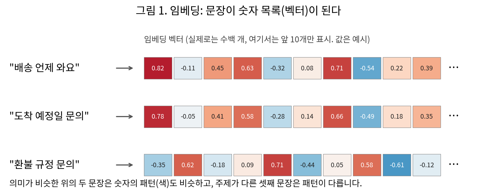
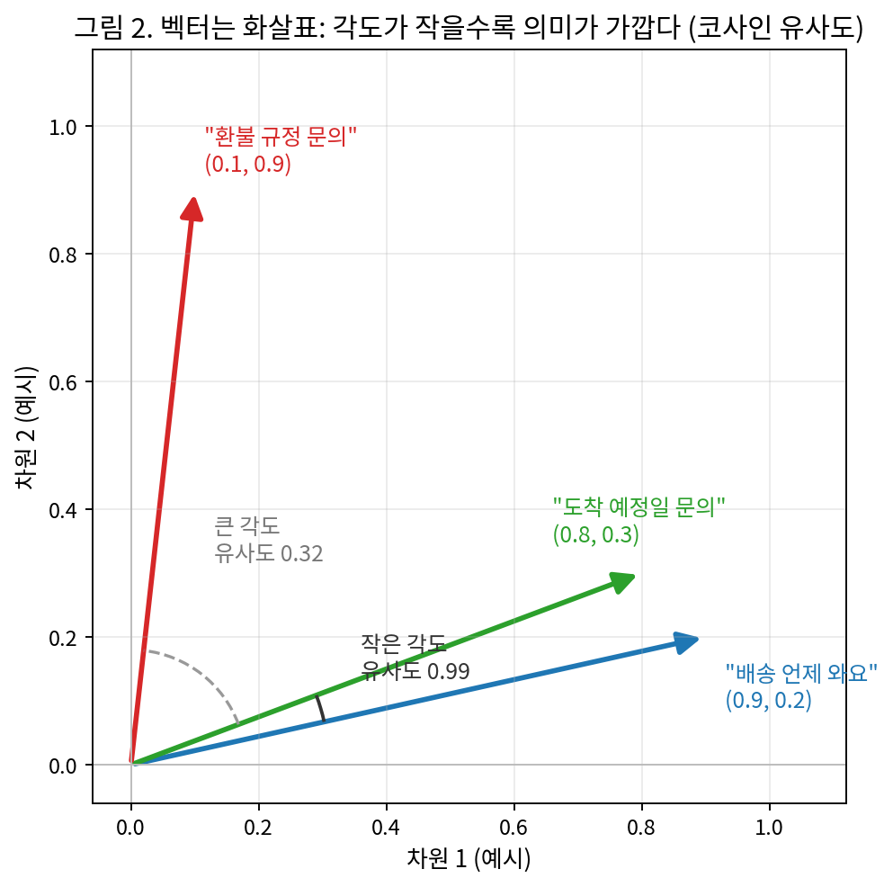
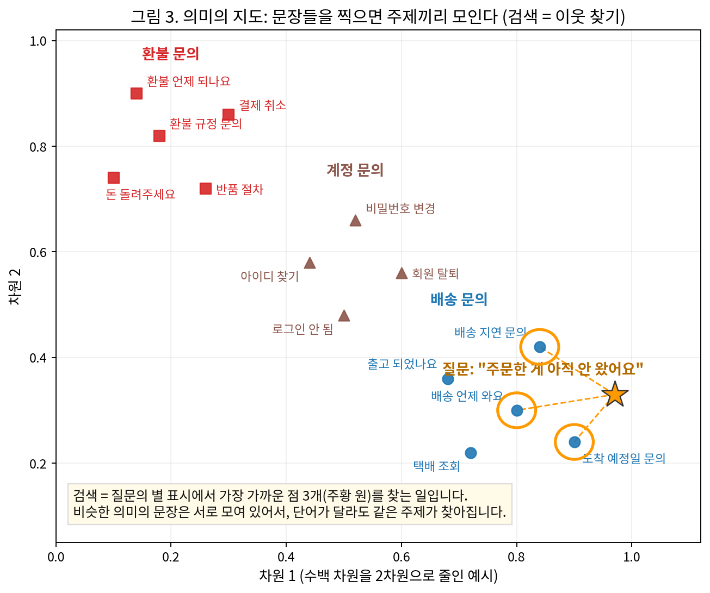
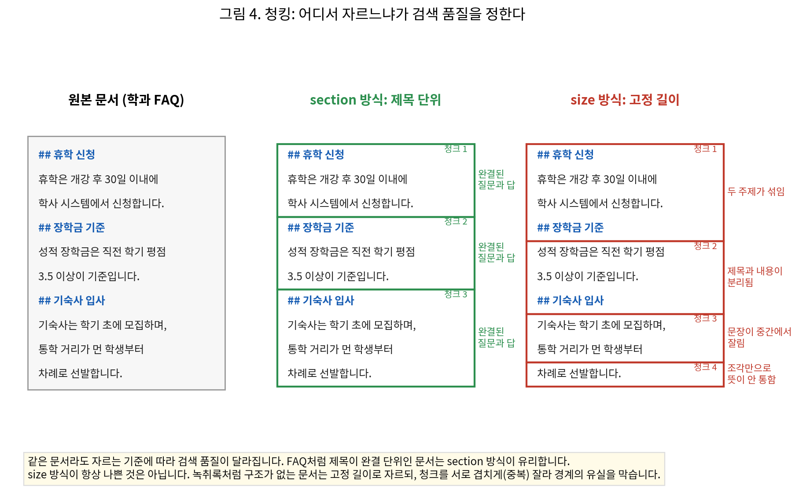

[6주차] API 연동과 RAG 챗봇
LLM AI 개발
6주차
API 연동과 RAG 챗봇
실습 자료 이 주차 키트 파일 보기 · 내려받기
지금까지 우리는 Claude Code라는 완성된 도구를 통해 AI에게 일을 시켜 왔습니다. 이 수업부터는 만드는 쪽으로 넘어갑니다. 첫걸음은 그 도구를 걷어내고, 내가 만든 프로그램이 AI에게 직접 말을 걸게 하는 것입니다. 그다음은 AI가 배운 적 없는 우리 문서를 근거로 답하게 만드는 것입니다.
진행은 세 부분입니다.
- 첫 호출과 미니 챗봇: 내 파이썬 코드로 AI에게 직접 요청을 보내 답과 사용량을 확인하고, AI는 대화를 기억하지 않으므로 이력 배열로 기억을 만듭니다(1~6장, 실습 1 · 2).
- 검색기: 문장을 숫자로 바꿔 의미가 가까운 문서 조각을 찾는 검색기를 완성하고, 고정 테스트와 재현율로 판정합니다(7~12장, 실습 3).
- RAG 챗봇: 검색 결과를 근거로 붙인 증강 프롬프트로 챗봇을 완성하고, 같은 챗봇을 사내규정 문서로 돌립니다(13~17장, 실습 4).
시작은 수업마다 같습니다. 환경 접속과 자료 받기(0장)입니다.
0. 시작하기: 환경 접속, 자료 받기, CLAUDE.md · 동작 원리 되짚기
수업은 수업마다 같은 순서로 시작합니다. 서버에 접속하고, 터미널 2개를 배치하고, Claude Code가 동작하는지 점검하고, week06 자료를 받습니다. 처음이거나 절차를 잊었어도 이 장만 따라오면 실습을 시작할 수 있습니다.
0-1. 실습 환경 접속
앞선 수업에서 갖춘 환경을 그대로 다시 엽니다. 처음이거나 절차를 잊었다면 아래 「처음 접속하거나 절차를 잊은 사람」부터.
서버 접속. PowerShell에서
ssh 아이디@서버주소(비밀번호는 쳐도 안 보임). 프롬프트가[아이디@실습서버 ~]$로 바뀌면 성공. VS Code Remote-SSH를 쓰면 같은 프롬프트가 VS Code 터미널에 뜹니다. 이 창이 내 PC인지 서버인지는 프롬프트가 알려줍니다.PS C:\Users\이름>= 내 PC, 대괄호에@실습서버가 보이면 서버(날짜 · 시각 · 폴더가 함께 나올 수 있습니다).처음 접속하거나 절차를 잊은 사람. 계정은 1주차에 나눠 준 아이디(이름 영문 약자+성, 예: 홍길동 → gdhong)이고 목록은 덱의 「접속 · 첫 접속」 장에 있습니다. 설치가 안 되어 있으면 「접속 · 설치」 장을 따릅니다. PowerShell을 열고(시작 검색 “Windows PowerShell” 또는 Win+X → 터미널) 아래를 칩니다.
첫 접속에만
continue connecting? (yes/no)?질문이 나오고yes를 칩니다. 비밀번호는 쳐도 화면에 안 보이는 것이 정상이고, 끊기면 다시ssh부터입니다. 초기 비밀번호는 전원 공통이니 접속 뒤passwd로 반드시 바꿉니다(현재 비밀번호 → 새 비밀번호 2번 →updated successfully). 아이디나 비밀번호를 모르면 손을 듭니다.
ssh 아이디@서버주소 ... continue connecting? (yes/no)? yes # 첫 접속에만
아이디@서버주소's password: # 입력해도 안 보임
[아이디@실습서버 ~]$ # 접속 성공! passwd초기 비밀번호였다면 passwd로 바꿉니다.
- 확인 1 프롬프트가 내 위치를 알려줍니다.
PS C:\Users\이름>= 내 PC,[아이디@실습서버 ~]$= 서버.
VS Code Remote-SSH(권장). VS Code 설치(최초 1회) → 왼쪽 확장(Extensions) 아이콘 → “Remote - SSH” 검색 → Install(최초 1회) → F1 → Remote-SSH: Connect to Host... → 아이디@서버주소 입력(ssh는 붙이지 않습니다) → 처음이면 Linux 선택 → 비밀번호 → 왼쪽 아래에 SSH: 서버주소가 보이면 연결 완료 → File > Open Folder → /home/아이디.
탐색기에 서버 파일이 보이고, Ctrl+S 저장이 곧 서버에 쓰기입니다. 연결이 안 되면 PowerShell 창 2개로 각각 ssh 접속하면 그 두 창이 터미널 1 · 2를 대신합니다(파일은 cat으로 확인). 붙여넣기는 VS Code 터미널 Ctrl+V, PowerShell은 우클릭.
- 확인 2 왼쪽 아래에
SSH: 서버주소가 보인다. 탐색기에 서버 파일이 보이고, 터미널 2개가 모두 서버에서 열려 있다.
터미널 2개 배치. 터미널 1 = Claude Code(지시하는 창), 터미널 2 = 서버 명령(직접 실행해 확인하는 창). 나란히 엽니다. VS Code에서는 Terminal > New Terminal, 분할 아이콘으로 하나 더. 이 터미널은 서버에서 열리므로
ssh를 다시 치지 않습니다.강의안의 배지
[Claude Code 터미널]/[서버 터미널]가 이 구분이고,claude가 떠 있는 동안의 입력은[Claude Code 안]입니다. 이 수업의 명령은 대부분 서버 터미널에서 실행하고, Claude Code는 실습 3 · 4에서 코드 완성을 맡길 때만 씁니다. 두 터미널의 현재 폴더는 각각 따로 바뀝니다. 한쪽에서cd를 해도 다른 쪽은 움직이지 않습니다. Remote-SSH가 안 되면 PowerShell 창 2개로 진행합니다.환경 점검. claude 버전 → API 키 → 모델 순서로 칩니다.
claude --version
echo ${ANTHROPIC_API_KEY:0:8} 2.x.x (버전 숫자는 달라도 됩니다)
sk-ant-a (빈 줄이면 키 없음 → 「접속 · 설치」 장) > /status
Model: haiku
> /exit/status에 Model: haiku가 보이면 준비 완료입니다. Model이 haiku가 아니면 /model에서 다시 선택합니다. 이 모델은 Claude Code 대화의 모델입니다. 이 수업의 실습 1 · 2 · 4가 부르는 API 모델은 COURSE_MODEL(실습 1에서 등록)이며, 같은 ANTHROPIC_API_KEY를 씁니다.
비밀번호를 잊었으면 손을 들어 알립니다. claude: command not found면 터미널을 닫고 새로 엽니다. claude를 실행했을 때 로그인 방법을 고르는 화면이 나오면 키 등록이 빠진 것입니다. echo 줄이 빈 줄이어도 같은 상태입니다. 앞 8자 sk-ant-a는 모든 키가 같은 접두어라 비밀이 아니고, 그 뒤는 화면에 출력하지 않습니다.
아직 설치와 키 등록을 하지 않았다면(처음이거나 잊었다면). 배포 폴더 /home/공용계정/week01에 들어 있는 접속 가이드를 따라옵니다. 요약하면 curl -fsSL https://claude.ai/install.sh | bash → 터미널을 닫았다 새로 열기 → claude --version → cat ~/*.txt로 키 복사 → echo 'export ANTHROPIC_API_KEY=발급키' >> ~/.bashrc → source ~/.bashrc → claude 첫 실행 승인(Yes → Security notes에서 Enter → 폴더 신뢰 Yes) → /model에서 Haiku 선택(Opus 금지) → /status.
모두 최초 1회이고 재접속해도 유지됩니다. 설치 · 키 등록 · 모델 설정은 모두 서버 터미널에서 합니다. 내 PC PowerShell 창에서 치면 설치되지 않습니다. 키 원문은 화면 공유나 채팅에 노출하지 않습니다.
[Claude Code 안] · 모델 설정
> /model → 목록에서 Haiku 선택 (Opus 금지)
> /status
Model: haiku
> /exit로그인 방법 선택 화면이 나오면 키 등록이 빠진 것입니다. Go back으로 나가 키 등록부터 다시 합니다.
0-2. 자료 받기: week06 폴더를 내 폴더로 복사
서버에는 성격이 다른 폴더가 둘 있습니다. 내 폴더 /home/아이디(읽기 + 쓰기, 이 과목 작업 공간이자 제출함. 산출물은 week01 · week02 · week03 · week04 · week05 · week06처럼 주차별 폴더로 정리하고 지금 쓰는 폴더는 week06입니다. 다른 학생은 내 폴더를 볼 수 없습니다)와 공용 배포 폴더 /home/공용계정(읽기 전용, 수업 자료가 같은 이름의 주차 폴더로 배포됩니다). 파일 수정 작업은 반드시 배포 폴더 파일을 복사해 「내 폴더」에서 합니다.
cd ~
cp -rn /home/공용계정/week06 ~/
ls week06
cp -n week06/내프롬프트_양식.md week06/내프롬프트.md
cd week06 CLAUDE.md chat.py conftest.py embed_check.py embed_search.py pytest.ini rag_chat.py requirements.txt tests
강의안_06주차.md 내소재_양식.md 내프롬프트_양식.md 사내규정 예비 예비_검색기 슬라이드_06주차.pdf 평가문항.csv 학과FAQ.mdcp -rn은 폴더를 통째로 복사하되 이미 있는 파일은 덮어쓰지 않는다는 뜻입니다. 재접속해서 다시 쳐도 기존 작업이 지워지지 않습니다. 키트 구성은 「week06 폴더에 들어 있는 것」에서 번호로 설명합니다.
요약하면 requirements.txt가 실습 1에서 설치할 패키지(anthropic · pytest), chat.py가 실습 2의 골격(이력 두 줄 미완성), embed_search.py · embed_check.py · 학과FAQ.md · 평가문항.csv가 실습 3의 검색기 골격과 예제 문서, rag_chat.py가 실습 4의 챗봇 골격(build_prompt 미완성), tests/가 검색기 · 챗봇의 고정 테스트 6개(pytest.ini · conftest.py는 pytest 설정), 사내규정/이 실습 3 · 4의 두 번째 문서(가상 회사 복무 규정 발췌와 평가문항), CLAUDE.md가 Claude Code에 코드를 맡길 때 읽히는 규칙입니다.
내프롬프트_양식.md는 실습 3 · 4에서 Claude Code에 보낼 지시문 양식이고, 내소재_양식.md는 화면의 숫자를 남겨 두고 싶을 때 쓰는 선택 기록지입니다. 예비_검색기/는 검색기 완성본, 예비/는 챗봇 완성본(build_prompt가 채워진 판)과 API가 막혔을 때 읽을 응답 샘플입니다.
지시문 양식을 내프롬프트.md로 복사해 둡니다. 이 수업의 작업은 전부 ~/week06에서 하고, 실습 1의 hello_claude.py도 여기에 만듭니다. 마지막 cd week06으로 서버 터미널을 이 폴더에 둡니다. 결과물은 업로드가 없습니다. VS Code가 서버에 연결되어 있어 저장(Ctrl+S)이 곧 서버에 쓰기입니다.
ls는 “지금 폴더”, ls ~는 “내 홈”입니다. 내 홈에는 README.md와 등록한 API 키 파일(내키이름.txt)이 있습니다.
슬라이드 PDF와 강의안을 내 PC에서도 보려면 내 PC의 새 PowerShell 창에서 받습니다. 서버 접속 창은 그대로 두고 창을 하나 더 엽니다. cp는 서버 안 복사, scp는 내 PC로 전송이고, 앞에서 복사해 둔 week06에서 가져옵니다. 명령 끝의 마침표(.)는 “지금 이 폴더로”라는 뜻이며, 프롬프트(PS C:\Users\이름>) 뒤의 명령만 입력합니다. 서버 창([아이디@실습서버 ~]$)에서 치면 내 PC가 아니라 서버 안에 내려받아집니다.
scp 아이디@서버주소:~/week06/*.pdf .
scp 아이디@서버주소:~/week06/강의안_06주차.md .
start 슬라이드_06주차.pdf 아이디@서버주소's password:
슬라이드_06주차.pdf 100%
강의안_06주차.md 100%한글 파일명 입력이 어려우면 파일명 대신 *.pdf로 써도 됩니다. start 명령을 치면 PDF가 바로 열립니다. 자기 화면에 띄워 놓고 따라옵니다. PDF가 아직 없으면 .md만 받고 강의안을 먼저 봅니다. 강의안 .md는 VS Code에서 열고 Ctrl+Shift+V(미리보기) 또는 Ctrl+K V(나란히 보기)를 누릅니다. 별도 설치 없이 되는 내장 기능이며, 터미널이 아니라 편집기에서 누르는 단축키입니다.
서버에서는 ls week06에 강의안 · 양식 · chat.py · embed_search.py · rag_chat.py · tests · 사내규정이 보입니다.
- 확인 3 내 PC에 슬라이드 PDF와 강의안
.md가 받아졌고, PDF가 화면에 열렸다.
0-3. CLAUDE.md · 동작 원리 되짚기
CLAUDE.md · 동작 원리 수업은 세 부분이었습니다(덱 「RECAP · CLAUDE.md · 동작 원리」).
| 부분 | 무엇을 했나 |
|---|---|
| ① CLAUDE.md와 rules | CLAUDE.md는 매 세션 읽히는 규칙 파일입니다. /init 초안에 빠진 규칙을 사람이 골라 작업 규칙 · 금지 사항으로 넣었습니다. 읽혔는지는 새 세션 /context의 Memory files 숫자로 보고, /compact 뒤에도 그대로 다시 읽히는 것을 봤습니다. 특정 경로에만 필요한 규칙은 머리말에 paths를 단 rules 파일로 나눠, 그 경로의 파일을 읽을 때만 불려 오게 했습니다 |
| ② 저장 위치와 강제 | 컨텍스트 윈도우 · 메모리 · CLAUDE.md의 세 저장 위치를 판정 질문 두 개로 갈랐습니다. CLAUDE.md는 모델이 판단하는 권고라 어길 수 있으므로, 지켜졌는지는 결과로 확인합니다. 반드시 막아야 하는 일은 settings.json의 permissions · hook처럼 모델이 아니라 프로그램이 판정하는 장치로 막습니다 |
| ③ LLM 동작 원리와 환각 | LLM은 다음 토큰의 확률을 계산하고 후보 중 하나를 고르는(샘플링) 기계라 같은 질문에도 답이 달라지고, temperature가 그 폭을 정합니다. 토큰이 요금과 한도의 단위이며 같은 뜻도 한국어가 약 3배 토큰입니다. 환각은 없앨 수 없으므로 근거 문서를 붙이고 출력을 검증하는 장치를 둡니다 |
그 수업에서 한 일입니다(덱 「RECAP · 지난주 리마인드」). 파일은 열지 않아도 됩니다.
- ✓ 골격과 포트폴리오에 CLAUDE.md를 만들었습니다. 골격은
/init초안에 작업 규칙 · 금지 사항을 더했고, 포트폴리오는 초안을 고쳤습니다. - ✓ tests/ 전용 rules 파일을 만들었습니다. 머리말에
paths: "tests/**"가 있어 테스트 파일을 다룰 때만 읽힙니다. - ✓ CLAUDE.md는
/compact뒤에도 다시 읽혔습니다. 교수 화면에서 Messages가 15k → 9.6k로 줄어도 Memory files는 992 토큰 그대로였습니다. - ✓ 토큰 수를 쟀고, temperature 코드를 봤습니다. 한국어 인사 20토큰, 영어 7토큰으로 약 3배였습니다. temperature는 이번 실습 1에서 직접 실행합니다.
이번 주 실습은 week06 키트만으로 합니다. 그 수업과 이번 주가 이어지는 점은 넷입니다.
| 그 수업 → 이번 주 | 이어지는 점 |
|---|---|
| temperature → 실습 1 | 지난주에는 코드만 봤습니다. 이번에는 값을 바꿔 직접 실행합니다 |
| 토큰 → 사용량과 비용 | API 응답의 input · output tokens가 지난주에 잰 그 단위입니다 |
| 비용 실측 → 비용 계산 | 한 달 수업 4회 API 비용 약 $110. 이번 주는 RAG 챗봇의 한 달 비용을 예시로 봅니다 |
| 환각 대책 ① → RAG | 근거 문서를 붙이는 장치가 RAG입니다. 찾은 조각을 프롬프트에 넣어 답하게 합니다 |
그 수업에서 남은 문제가 이 수업의 어디에서 풀리는지 정리하면 다음과 같습니다(덱 「RECAP · 이번 주로 이어지는 것」).
| 지난주 학습 내용 | 남은 문제 | 해결되는 곳 |
|---|---|---|
| temperature 요청 코드의 구조 확인 | 값에 따른 출력 변화는 실행으로 확인하지 않음 | 이번 주 · 첫 호출. 실습 1. hello_claude.py로 temperature 직접 조절 |
| 대화 이력과 Memory files는 매 요청에 함께 전송됨 | 대화가 길어질수록 입력 토큰과 비용이 증가함 | 이번 주 · 미니 챗봇. 실습 2. 이력 배열을 쌓고 input_tokens로 확인 |
| 환각 대책 ①: 근거 문서를 함께 제공함 | 질문에 맞는 근거 문서를 찾아 붙이는 방법 | 이번 주 · 검색기와 RAG. 실습 3 · 4. 임베딩 검색과 증강 프롬프트 |
| CLAUDE.md는 권고이며, 강제는 별도 장치가 담당함 | 챗봇이 자료에 없는 질문을 거절하도록 강제하는 방법 | 이번 주 · 유사도 필터. 실습 4. 코드(필터)와 지시 두 층으로 거절 |
그 수업에서 토큰을 잰 token_count.py는 표준 라이브러리로 API 주소에 요청을 직접 보냈습니다. 이 수업의 SDK(anthropic 패키지)는 그 주소 · 인증 · 형식을 대신 처리해 주는 도구이고, 같은 ANTHROPIC_API_KEY를 씁니다. 두 방식을 나란히 놓은 비교는 실습 1의 복기 뒤에 있습니다.
이번 주차의 위치와 학습 목표
왜 API이고 왜 검색기인가
지난주까지는 이미 만들어진 프로그램인 Claude Code를 사용했습니다. 이번 주에는 AI 기능이 들어간 프로그램을 직접 작성합니다.
프로그램을 사용하는 것과 만드는 것은 다릅니다. Claude Code는 개발자가 터미널에서 쓰는 프로그램이라, 일반 사용자에게 그대로 제공할 수 없습니다. 반면 API 호출 코드는 웹페이지 · 모바일 앱 · 메신저 봇에 넣을 수 있습니다. 사용자는 터미널 없이 화면에서 질문하고 답을 받습니다. 실습은 터미널에서 하지만 원리는 같습니다.
API 호출이란 프로그램이 인터넷으로 AI 회사의 서버에 요청(질문과 설정)을 보내고 답을 받아 오는 것입니다. Claude Code도 내부에서 이 호출을 합니다. 이번 주에는 그 호출을 내 코드에서 직접 작성합니다. 터미널 챗봇에서 시작해, 주어진 문서를 근거로 답하는 RAG 챗봇까지 만듭니다. 사내 문서 챗봇 · 고객 상담 봇 · 업무 자동화는 모두 API 호출과 검색을 결합한 구조입니다.
이번 주차에 배우는 네 가지
목표는 프로그램에서 AI를 직접 호출하고, 검색한 문서를 근거로 답하는 챗봇을 완성하는 것입니다. 흐름은 첫 호출 → 비용 · 무상태 → 미니 챗봇 → 검색기 · 재현율 → 증강 프롬프트 → 사내규정 챗봇 → 보안 · 기업 활용입니다.
- 첫 API 호출 · 요청, 응답, 사용량. SDK로 모델 · 최대 토큰 수 · 메시지를 보내고 답을 받습니다. 응답의 입력 · 출력 토큰 수(usage)로 요금이 계산됩니다. system 지시와 temperature를 바꿔 답의 변화를 확인합니다.
- 대화 이력 · AI는 이전 대화를 기억하지 않음. API 호출은 매번 독립적으로 처리됩니다(무상태). 지난 대화(이력)를 매번 함께 보내야 대화가 이어집니다. 이력이 길어지면 입력 토큰이 늘어 오래된 부분을 잘라 냅니다.
- 검색기 · 질문과 의미가 가까운 문서 찾기. 문서를 조각(청크)으로 나누고 숫자 벡터(임베딩)로 저장합니다. 질문과 유사도가 가장 높은 조각 3개를 찾습니다. 고정 테스트와 재현율(정답을 찾은 비율)로 성능을 확인합니다.
- RAG 챗봇 · 문서를 근거로 답하고, 없으면 거절. 찾은 조각을 질문에 근거로 붙여 프롬프트를 만듭니다. 관련 없는 조각은 코드가 걸러 내고, 근거가 없으면 거절하도록 지시합니다. 같은 코드를 사내규정 문서에도 그대로 적용합니다.
무상태(stateless): 서버가 이전 요청을 저장하지 않고 요청마다 따로 처리하는 방식(웹 HTTP의 용어). 서버가 사용자별 기록을 보관하지 않으므로 많은 사용자를 동시에 처리하기 쉽고, 어느 서버가 요청을 받아도 같은 답을 낼 수 있어 서버를 늘리거나 장애에 대응하기 쉽습니다. 그 대신 이전 대화는 요청마다 함께 보내야 합니다.
week06 폴더에 들어 있는 것
SERVER MAP 장에서 복사한 ~/week06 폴더입니다. 번호는 아래 설명에 대응합니다.
~/week06/
├── CLAUDE.md ①
├── requirements.txt ②
├── chat.py ③
├── embed_search.py · embed_check.py ③
├── rag_chat.py ③
├── tests/ · pytest.ini · conftest.py ④
│ ├── test_embed_search.py
│ └── test_rag_chat.py
├── 학과FAQ.md · 평가문항.csv ⑤
├── 사내규정/ ⑤
│ └── 복무규정.md · 평가문항.csv
└── 예비/ · 예비_검색기/ · 양식 둘 · 강의안- ① CLAUDE.md · Claude Code 규칙. 테스트 수정 금지, 키를 코드에 쓰지 않기, 실행 명령이 들어 있습니다. Claude Code에 코드 작성을 맡길 때 적용됩니다.
- ② requirements.txt · 설치 목록. anthropic(SDK)과 pytest입니다.
.venv폴더에 설치하고, 파이썬은.venv/bin/python으로 실행합니다. - ③ 파이썬 파일 · 직접 완성하는 코드.
chat.py는 두 줄,embed_search.py는 함수 두 개,rag_chat.py는 함수 하나(build_prompt)를 직접 작성합니다. 막히면 예비 완성본을 씁니다.embed_check.py는 실습 3의 서버 점검용으로 완성되어 있습니다. - ④ tests/ · 고정 테스트 6개. API 없이 돌아갑니다. 처음 6 failed → 검색기 완성 후 3 passed → build_prompt 완성 후 5 passed(남은 1개 trim_history는 채우지 않음). 테스트 파일은 고치지 않습니다.
- ⑤ 학과FAQ.md · 사내규정/ · 검색할 문서. 실습용 가상 문서입니다.
평가문항.csv로 검색 성능(재현율)을 잽니다.
SDK(Software Development Kit): 서비스를 코드에서 쓰기 쉽게 회사가 배포하는 도구 묶음. 주소 · API 키 · 요청 형식을 대신 처리해, 함수 한 줄로 AI를 호출할 수 있습니다.
재현율(Recall@3): 평가 질문 가운데 정답 조각이 검색 결과 상위 3개 안에 든 비율. 질문마다 정답이 하나일 때의 재현율로, 적중률(Hit@3)이라고도 합니다. 정답 여부는 키워드 포함으로 판정합니다.
이번 주차의 위치: 컨텍스트를 코드로 채우기
지난주까지는 규칙 파일로 Claude Code에 컨텍스트를 갖춰 줬고, 이번 주차는 내 코드가 API를 호출하고 검색으로 컨텍스트를 채웁니다. 코드로 거르고 테스트로 확인하는 부분은 3단계의 시작입니다. 한 줄로 줄이면 필요한 문서를 코드가 검색해 컨텍스트에 넣고, 근거 없는 답은 코드로 막는다입니다.
| 단계 | 무엇을 하나 | 이번 주차 |
|---|---|---|
| 1단계 · 프롬프트 엔지니어링 | 무엇을 할지 매번 정확하게 지시합니다. 모든 활용의 출발점 | system 지시와 temperature를 코드에서 직접 설정합니다 |
| 2단계 · 컨텍스트 엔지니어링 (1을 포함해 확장) | 올바른 판단을 하도록 전체 정보를 갖춰 줍니다. 대표 도구는 CLAUDE.md | 대화 이력을 코드가 매번 보내고, 질문과 가까운 문서 조각을 찾아 근거로 붙입니다(RAG) |
| 3단계 · 하네스 엔지니어링 (1 · 2를 포함해 확장) | 강제 검증 장치를 붙여 결과를 신뢰할 수 있게 하는 구조. MCP · Skill · Hook | 관련 없는 조각을 코드로 거르고, 근거가 없으면 거절하게 하고, 고정 테스트 6개로 확인합니다 |
| 4단계 · 루프 엔지니어링 (1 · 2 · 3을 포함해 확장) | 계획 · 실행 · 검증을 스스로 도는 단계. 에이전트 · 자동화 | 이번 주차에서는 다루지 않습니다 |
네 단계는 안쪽 단계를 품으며 넓어집니다. 이번 주차에 만드는 것을 단계에 놓으면 API 직접 호출 · 대화 이력 관리(1 · 2단계), 검색기로 근거 찾기(RAG) · 재현율 측정(2단계), 코드 필터 · 근거 없으면 거절 · 고정 테스트(3단계)입니다. 네 이름 모두 업계에서 실제 쓰는 말입니다.
앞의 둘은 Anthropic 공식 용어(docs.claude.com · anthropic.com/engineering), 하네스는 martinfowler.com의 해설이 대표적이고 Anthropic도 Claude Code를 「에이전틱 하네스」라 부릅니다. 루프 엔지니어링도 같은 흐름의 용어입니다(bdtechtalks.com).
이번 주차 구성
| 부분 | 무엇을 하나 | 해결할 문제 | 다루는 것 |
|---|---|---|---|
| 1 첫 호출과 미니 챗봇 | 내 파이썬 코드로 Claude API를 직접 호출해 답과 토큰 사용량을 받고, 이력 배열로 대화를 이어 갑니다 | 호출은 매번 독립(무상태)이라 이력을 보내지 않으면 앞 대화를 기억하지 못함 | 실습 1~2 |
| 2 검색기 | 문서를 조각내 임베딩으로 색인하고, 질문과 의미가 가까운 조각을 찾는 검색기를 완성해 재현율로 품질을 잽니다 | 모델은 학습하지 않은 문서를 모르므로 근거 없이 그럴듯한 오답을 만들 수 있음 | 임베딩 · 청킹 · 실습 3 |
| 3 RAG 챗봇 | 검색한 조각을 근거로 붙인 증강 프롬프트로 챗봇을 완성하고, 같은 챗봇을 사내규정 문서로 돌립니다 | 관련 없는 조각과 근거 없는 답을 코드로 거르지 않으면 오답이 그대로 전달됨 | 필터 · 이력 · 실습 4 · 정리 |
학습 목표
수업이 끝나면 이 세 질문에 답할 수 있습니다. 질문마다 완료 조건과 응용이 있습니다.
- API로 무엇을 주고받는가. 모델 · 지시 · messages를 보내면 답과 토큰 사용량(요금)을 받습니다.
- 완료 조건(실습 1):
hello_claude.py실행 결과에 답과 usage가 출력됨. - 응용: 서비스에 AI 기능을 붙일 때 호출 한 번의 토큰 비용을 미리 계산합니다.
- 완료 조건(실습 1):
- 앞 대화는 어떻게 기억되는가. 호출은 매번 독립이라 프로그램이 이력을 다시 보내고, 길어지면 자릅니다.
- 완료 조건(실습 2 · 4): 이력을 채워 앞 대화를 이어 답함. 이력 자르기(
trim_history)는 실습 4에서 구조와 테스트로 확인함. - 응용: 대화형 서비스에서 이력을 관리해 긴 대화의 토큰 비용을 줄입니다.
- 완료 조건(실습 2 · 4): 이력을 채워 앞 대화를 이어 답함. 이력 자르기(
- 문서 근거는 어떻게 찾아 넣는가. 문서 조각을 임베딩으로 색인해 질문과 가까운 조각을 찾고, 근거로 프롬프트에 넣습니다.
- 완료 조건(실습 3 · 4): 검색기의 재현율을 재고, 챗봇이 고정 테스트 5개를 통과함(남은 1개는 채우지 않는
trim_history). - 응용: 사내 규정 · 매뉴얼 문서를 근거로 답하는 챗봇을 만듭니다.
- 완료 조건(실습 3 · 4): 검색기의 재현율을 재고, 챗봇이 고정 테스트 5개를 통과함(남은 1개는 채우지 않는
1. API: 프로그램이 AI에게 말을 거는 방법
API(Application Programming Interface)는 프로그램끼리의 약속입니다. 사람은 화면과 키보드로 AI를 쓰지만 프로그램에는 화면이 없습니다. 정해진 형식으로 요청을 보내고 정해진 형식으로 답을 받습니다. 그 형식이 API입니다.
요청과 답은 JSON 텍스트입니다. 내 프로그램이 JSON으로 보내면 서버가 AI를 실행해 JSON으로 돌려줍니다. 형식 변환과 전송은 SDK가 대신합니다. 주소 · 인증 · 형식을 대신 처리하는 도구를 회사가 함께 배포합니다. 이것이 SDK(Software Development Kit)이고, 파이썬에서는 anthropic 패키지입니다.
graph LR
A["내 파이썬 코드<br/>hello_claude.py"] -->|"파이썬 값"| B["anthropic 패키지<br/>SDK"] -->|"JSON"| S["Anthropic 서버<br/>AI 실행"]
S -->|"JSON"| B -->|"파이썬 값"| A
| 방향 | 담기는 것 |
|---|---|
| → 요청 | model · max_tokens · messages + 선택 항목 system · temperature |
| ← 응답 | content · usage · stop_reason (답 본문 · 토큰 사용량 · 멈춘 이유) |
messages가 목록이라는 점이 중요합니다. 이전 대화를 이 목록에 함께 넣어 보내면 AI가 앞 대화를 이어서 답합니다. 앞서 토큰을 잰 token_count.py는 이 요청을 표준 라이브러리로 직접 보냈습니다. SDK를 쓰는 코드와의 비교는 실습 1 복기 뒤에 있습니다. 이어지는 세 절에서 JSON과 messages → 요청 → 응답 순서로, 코드와 함께 하나씩 봅니다.
요청과 답은 JSON, 대화는 messages 목록
- JSON은 이름과 값을 적는 텍스트 형식입니다.
{ }안에"이름": 값을 쉼표로 이어 적습니다. 이름은 큰따옴표로 감싸고,[ ]는 순서 있는 목록입니다. - messages는 대화 칸의 목록입니다. 목록 순서가 대화 순서입니다. 칸이 하나뿐이어도
[ ]로 감쌉니다. - 한 칸은 role과 content입니다. role은 말한 쪽(
user또는assistant), content는 그 말의 내용입니다.
요청 본문을 JSON으로 적으면 다음과 같습니다.
{
"model": "claude-haiku-4-5-20251001",
"max_tokens": 300,
"messages": [
{"role": "user",
"content": "자기소개를 해 주세요."}
]
}JSON을 파이썬으로 읽으면 { }는 dict, [ ]는 list가 되고, true · false · null은 True · False · None이 됩니다. 실습 1의 hello_claude.py에 쓰는 messages=[{...}]가 이 JSON과 같은 모양입니다. SDK가 파이썬 값을 JSON으로 바꿔 보냅니다.
주의. role에 system을 쓰면 오류입니다. Claude API는 AI에게 주는 지시를 messages 밖의 system 자리에 따로 둡니다.
요청은 필수 세 항목에 선택 항목을 더한다
- 필수는 model · max_tokens · messages입니다. 셋 중 하나라도 빠지면 오류가 나고 요청이 실행되지 않습니다.
- max_tokens는 출력 토큰의 상한입니다. 답이 이 길이에 닿으면 중간에 끊깁니다. 입력 토큰은 따로 계산되므로 전체 비용의 상한은 아닙니다.
- system은 messages 밖의 별도 인자입니다. 말투 · 역할 같은 지시를 대화와 분리해 둡니다. temperature는 답의 변동 폭(0.0~1.0)입니다.
response = client.messages.create(
model=MODEL, # 필수 · 어느 모델
max_tokens=300, # 필수 · 출력 토큰 상한
messages=[ # 필수 · 대화 목록
{"role": "user", "content": "안녕하세요"},
],
system="너는 조교다.", # 선택 · 지시
extra_body={"temperature": 0.0}, # 선택 · 변동 폭
)인자(argument)는 함수 괄호 안에 이름=값으로 넘기는 값입니다. model=MODEL에서 model이 이름, MODEL이 값입니다. 이 과목은 환경변수 COURSE_MODEL에 등록한 Haiku 모델 이름을 MODEL로 읽어 씁니다. 실습 1은 필수 세 항목만으로 먼저 호출하고, system과 temperature를 한 줄씩 더해 답이 어떻게 달라지는지 봅니다.
답은 content에, 사용량은 usage에 담겨 온다
- content는 조각의 목록입니다. 답이 여러 조각으로 올 수 있어 목록입니다. 글자 답은 첫 조각의 text에 있습니다.
- usage는 요금의 근거입니다.
input_tokens(보낸 양)와output_tokens(받은 양)에 각각 단가를 곱한 값이 요금입니다. - stop_reason은 멈춘 이유입니다.
end_turn은 답을 끝까지 쓴 것이고,max_tokens는 상한에 걸려 잘린 것입니다.
응답 본문은 다음과 같습니다(숫자는 예시).
{
"role": "assistant",
"content": [
{"type": "text", "text": "안녕하세요. 저는 ..."}
],
"stop_reason": "end_turn",
"usage": {"input_tokens": 25, "output_tokens": 61}
}파이썬에서는 다음처럼 꺼냅니다.
response.content[0].text # 답 본문
response.usage.output_tokens # 출력 토큰 수
response.stop_reason # 멈춘 이유실습 1에서 출력하는 두 숫자가 usage 값입니다. 토큰과 비용 장의 계산이 이 숫자에서 출발합니다. stop_reason이 max_tokens면 답이 잘린 것입니다. max_tokens를 늘리거나 짧게 답하라고 지시합니다.
2. 실습 1: 첫 호출
이 실습에서 AI에게 처음으로 프로그램을 통해 말을 겁니다. 단계 제목 앞의 배지가 실행 위치입니다. 이 실습의 명령은 모두 서버 터미널, 파일 편집은 VS Code입니다. 준비는 0장에서 마쳤습니다(~/week06에 키트가 있고 서버 터미널이 그 폴더에 있는 상태).
실습 1 · 2에서 막힐 때: API 호출. 실습 전에 훑어 두고, 막히면 다시 봅니다. 오류 메시지의 마지막 줄부터 읽고, 실행 → 키 → 모델 → 서버 순서로 봅니다.
- 실행이 안 될 때 ·
ModuleNotFoundError: anthropic이 나온다.python3로 실행한 것입니다. 이 과목의 가상환경 파이썬으로 다시 실행합니다.
.venv/bin/python hello_claude.pycan't open file·No such file이 나온다. 다른 폴더에서 실행했거나 파일 이름이 다릅니다.week06에 파일이 있는지 봅니다.
cd ~/week06 ; lsSyntaxError·IndentationError가 나온다. 입력 오타입니다. 오류에 찍힌 line 번호 줄의 괄호 · 따옴표 · 쉼표 · 들여쓰기를 봅니다.- API가 오류를 돌려줄 때 ·
401·authentication오류가 나온다. 키가 없거나 틀렸습니다. 앞 여덟 글자가sk-ant-a가 아니면 「접속 · 설치」 장의 키 등록을 다시 합니다.
echo ${ANTHROPIC_API_KEY:0:8}KeyError: 'COURSE_MODEL'·404가 나온다. 모델 이름이 비었거나 틀렸습니다. 비어 있으면 실습 1의 모델 등록 두 줄을 다시 실행합니다. 오류 끝의 message가 무엇이 없는지 알려 줍니다(예:'model: 없는모델').
echo $COURSE_MODEL429·529·overloaded가 나온다. 요청이 몰린 것입니다. 1분 뒤 다시 실행하고, 계속되면 교수에게 알린 뒤예비/응답_샘플.md로 진행합니다.공통: 끝나지 않으면
Ctrl+C· 고쳐도 그대로면Ctrl+S로 저장(탭 옆 ●) · 위치는pwd. 명령 표기에서$로 시작하면 서버 터미널에서 입력합니다. Claude Code 안이라면 같은 명령 앞에!를 붙여도 결과는 같습니다.
- [서버 터미널] 가상환경을 만들고 패키지를 설치합니다.
requirements.txt에 적힌anthropic(SDK)과pytest를week06/.venv에 설치합니다..venv는 이 폴더 전용 파이썬이라 서버 파이썬이나 다른 학생에게 영향이 없습니다. 이후 파이썬 명령은 모두.venv/bin/python으로 실행합니다(사내규정/안에서는../.venv/bin/python). 이어서 임포트로 확인합니다. 마지막 줄에 버전 숫자가 나오면 설치된 것입니다.
cd ~/week06 && python3 -m venv .venv
.venv/bin/python -m pip install -r requirements.txt
.venv/bin/python -c "import anthropic; print(anthropic.__version__)" Successfully installed anthropic-1.11.0 ... pytest-9.1.1
1.11.0명령 풀이: venv .venv는 week06 전용 파이썬을 만들고, pip install -r은 목록의 패키지를 .venv에 설치하며, -c "..."는 한 줄 코드로 설치를 확인합니다. ModuleNotFoundError는 python3로 실행한 것이니 .venv/bin/python으로 다시 실행합니다. 설치가 멈추거나 오류가 나면 손을 들어 알립니다. - 확인 4 버전 숫자가 나오는 것을 확인했다.
- [서버 터미널] 과목 모델 이름을 등록합니다. 이 과목에서 쓰는 모델 이름을
COURSE_MODEL에 저장합니다. 등록 방법은 키 등록 때와 같고 최초 1회면 됩니다.
echo 'export COURSE_MODEL=claude-haiku-4-5-20251001' >> ~/.bashrc
source ~/.bashrc
echo $COURSE_MODEL아래 화면 예시의 형태로 나오면 성공입니다.
claude-haiku-4-5-20251001모델 이름이 비어 있으면 등록 두 줄을 다시 실행합니다. - 확인 5 모델 이름이 보인다.
- [VS Code]
hello_claude.py를 만듭니다. 탐색기에서week06폴더 우클릭 → New File →hello_claude.py. 아래 코드 전체를 그대로 붙여 넣고 Ctrl+S로 저장합니다.
import os
import anthropic
MODEL = os.environ["COURSE_MODEL"]
client = anthropic.Anthropic() # ◀ 키
response = client.messages.create( # ◀ ① 요청
model=MODEL,
max_tokens=300,
messages=[{"role": "user", "content":
"안녕하세요. 자기소개를 두 문장으로 해 주세요."}],
)
print(response.content[0].text) # ◀ ② 답
u = response.usage # ◀ ③ 사용량
print(u.input_tokens, u.output_tokens)◀ 표시한 곳을 읽습니다.
- ① 요청: 모델 · 답의 최대 길이(max_tokens) · 보낼 말(messages) 세 가지를 보냅니다.
- ② 답: 답 글자는
response.content[0].text에 있습니다. - ③ 사용량: usage의 두 숫자가 이 호출의 요금 근거입니다.
키: API 키는 코드에 쓰지 않습니다. Anthropic()이 서버에 등록한 키를 자동으로 읽습니다. os.environ[...]은 환경변수에서 값을 꺼내는 것이고, os는 파이썬에 내장된 라이브러리라 설치 없이 씁니다. 붙여 넣은 뒤 줄 앞 빈칸(들여쓰기)이 위 코드와 같은지 봅니다. PDF에서 복사하면 빈칸이 사라질 수 있습니다. - 확인 6 hello_claude.py를 week06에 저장했다.
- [서버 터미널] 실행합니다. 답변 문장은 실행할 때마다 다릅니다.
.venv/bin/python hello_claude.py # 안녕하세요! 👋
저는 Claude라고 하는 AI 어시스턴트입니다. … ◀ ② 답: print(response.content[0].text)
35 106 ◀ ③ 사용량: print(u.input_tokens, u.output_tokens)출력을 코드의 표시와 맞춰 봅니다. ② 답: 문장 부분은 content[0].text를 찍은 것입니다. #과 이모지는 모델이 마크다운으로 꾸민 답입니다. ③ 사용량: 두 숫자는 보낸 토큰 수와 받은 토큰 수입니다. 키 · ① 요청은 print가 없어 화면에 찍히지 않습니다. 이 두 숫자에 단가를 곱하면 요금입니다. 답변 문장은 사람마다 다르니 옆 사람과 비교합니다. - 확인 7 답변 문장과 토큰 사용량이 함께 출력되는 것을 확인했다.
- [VS Code] system 두 줄을 추가합니다.
model=MODEL,줄 바로 아래에 아래 두 줄(◀ 추가)을 붙여 넣고 저장합니다. 줄 앞 빈칸은model=과 같게 맞춥니다.
response = client.messages.create(
model=MODEL,
system=("너는 우리 학과의 조교다. " # ◀ 추가
"존댓말로 두 문장 이내로 답한다."),
max_tokens=300,
messages=[{"role": "user", "content":
"안녕하세요. 자기소개를 두 문장으로 해 주세요."}],
)system이 하는 일. messages는 이번에 보낼 질문이고, system은 모든 답에 적용되는 역할과 규칙입니다. 여기서는 「학과 조교 · 존댓말 · 두 문장 이내」를 정했습니다. 화면에서 매번 입력하던 지시를 코드에 고정하는 것입니다. 괄호로 감싼 두 문자열은 파이썬이 하나로 이어 붙입니다. 따옴표를 줄 중간에서 닫지 않고 줄을 바꾸면 SyntaxError가 납니다.
[서버 터미널]에서 다시 실행해, 질문은 그대로인데 말투와 길이가 달라지는지 봅니다. input_tokens가 system 몫만큼 늘었는지도 봅니다.
.venv/bin/python hello_claude.py 안녕하세요. 학과 조교입니다. 궁금한 점을
말씀해 주시면 안내해 드리겠습니다.
48 21 ← input_tokens · output_tokens반말이 나와도 실패가 아닙니다. input_tokens가 늘었으면 system은 전달된 것입니다. 모델은 지시를 확률적으로 따르므로 일부(말투 · 문장 수)를 어길 수 있습니다. 옆 사람과 비교합니다. - 확인 8 system 지시를 넣기 전과 후의 답이 달라지는 것을 확인했다.
- [VS Code] temperature를 직접 조절합니다.
max_tokens=300,아래에extra_body줄을 넣고, 질문을"가을에 대한 한 줄 시를 써라."로 바꿔 저장합니다.
response = client.messages.create(
model=MODEL,
system=("너는 우리 학과의 조교다. "
"존댓말로 두 문장 이내로 답한다."),
max_tokens=300,
extra_body={"temperature": 0.0}, # ◀ 추가
messages=[{"role": "user", "content":
"가을에 대한 한 줄 시를 써라."}], # ◀ 바꿈
)temperature가 하는 일. 답의 단어를 고를 때 얼마나 다양하게 고를지 정합니다. 0.0은 가장 그럴듯한 단어 위주라 답이 거의 같고, 1.0은 다른 단어도 골라 답이 자주 달라집니다. 지금 SDK는 이 값을 extra_body 안에 넣어 보냅니다.
[서버 터미널]에서 0.0으로 세 번 실행한 뒤, 0.0을 1.0으로 고쳐 저장하고 다시 세 번 실행합니다. 0.0은 세 번 같고 1.0은 매번 다른지 봅니다.
.venv/bin/python hello_claude.py [0.0 ×3] 낙엽이 소복이 내려앉는 가을 하늘 아래, …
[1.0 ①] 낙엽이 소복이 내려앉은 길 위로, …
[1.0 ②] 낙엽이 소복이 내려앉으니, 세상이 한 폭의 …
[1.0 ③] 낙엽이 소복이 소복이 내려앉으며, …기본값. temperature를 지정하지 않으면 1.0으로 동작합니다. 4 · 5단계에서 실행할 때마다 답이 달랐던 이유입니다. 0.0이라도 같은 답이 완전히 보장되지는 않습니다. 같은 요청에 다른 답이 나오는 것은 고장이 아니라 이 설계에 따른 정상 동작입니다.
끝나면 되돌립니다. 5단계 코드 상자의 response = … ) 블록 전체를 복사해, 지금 파일의 같은 블록 자리에 덮어 붙이고 저장합니다. - 확인 9 temperature 값에 따라 답의 변동 폭이 달라지는 것을 확인했다.
[실습 1 · 복기 · 요청은 messages, 답은 content, 요금은 usage] 내 파이썬 코드에서 AI에게 처음 말을 걸었습니다. SDK를 설치하고, 모델 이름을 등록하고,
hello_claude.py를 실행했습니다.
- ① 요청에는 세 가지가 들어간다. 모델 · 최대 길이 · messages 목록이고, 역할과 규칙은 system에 둔다. API 키는 코드에 쓰지 않고
Anthropic()이 자동으로 읽는다.- ② 답은 content, 요금은 usage. 답 글자는
content[0].text에 있고, usage의 두 숫자(보낸 토큰 · 받은 토큰)로 요금이 계산된다.- ③ 같은 요청에 다른 답은 정상이다. temperature는 답의 변동 폭이고 기본값은 1.0이다. system 지시도 확률적으로 따르므로 말투 · 문장 수를 어길 수 있다.
생각해 볼 것 하나(적지 않고 생각만 합니다): SDK 없이 API를 부르려면 주소 · 헤더(키) · JSON 본문을 직접 적어야 한다.
hello_claude.py에는 그 줄이 없다. SDK가 대신해 준 일은 무엇인가? 힌트는 요청을 보내려면 꼭 필요한데hello_claude.py에는 안 보이는 것입니다.① 요청을 어디로 보내나?(서버 주소) ② 내가 누구인지 어떻게 알리나?(API 키) ③ 파이썬 값을 어떤 형식으로 바꿔 보내나?(JSON) 답은 다음 절에서 두 코드를 나란히 놓고 비교합니다. 폴더에 남은 것:
week06/hello_claude.py(system 판). 다음: 이 호출은 왜 앞 대화를 모르는가. 실습 2에서 두 줄로 기억을 만듭니다.
실습 1 · 복기 참고: SDK 없이 부르면 주소 · 키 · JSON을 직접 다룬다
같은 요청을 SDK 없이 표준 라이브러리로 보내면 다음과 같습니다(앞서 token_count.py가 이 방식이었습니다).
import json, os, urllib.request
body = {"model": os.environ["COURSE_MODEL"],
"max_tokens": 300,
"messages": [{"role": "user",
"content": "안녕하세요"}]}
req = urllib.request.Request(
"https://api.anthropic.com/v1/messages", # ①
data=json.dumps(body).encode(), # ③
headers={ # ②
"x-api-key": os.environ["ANTHROPIC_API_KEY"],
"anthropic-version": "2023-06-01",
"content-type": "application/json"})
data = json.load(urllib.request.urlopen(req)) # ③
print(data["content"][0]["text"]) # ④SDK로 쓰면 hello_claude.py와 같은 방식입니다.
import os
import anthropic
MODEL = os.environ["COURSE_MODEL"]
client = anthropic.Anthropic() # ① ② 주소 · 키
response = client.messages.create( # ③
model=MODEL,
max_tokens=300,
messages=[{"role": "user",
"content": "안녕하세요"}],
)
print(response.content[0].text) # ④다른 점. ① 주소와 ② 키 · 버전 헤더를 왼쪽(SDK 없이)은 직접 적고, 오른쪽(SDK)은 Anthropic()이 처리합니다. ③ SDK 없이는 json.dumps · json.load로 JSON을 직접 바꾸고, SDK는 create가 바꿉니다. ④ 답 꺼내기: data["content"] ↔︎ response.content.
SDK를 쓰면 좋은 점. 코드가 절반으로 짧아 오타가 줄고, 주소 · 헤더 형식을 외울 필요가 없습니다. 429 같은 일시 오류는 자동으로 2번 재시도합니다. 복기에서 생각한 답과 비교해 봅니다.
3. 토큰과 비용은 설계로 정해진다
실습 1의 4단계에서 출력한 두 숫자(input · output 토큰)로 요금이 계산됩니다.
- 단가 구조. 요금은 입력 토큰과 출력 토큰에 각각 단가를 곱한 합입니다. 출력 단가가 입력의 5배라서 답이 길수록 요금이 빠르게 늘어납니다.
- 등급 선택. 같은 회사 모델도 등급에 따라 단가가 다릅니다. 100만 토큰당 Haiku 4.5는 입력 $1 · 출력 $5이고, 최상위 등급은 그 10배입니다. 이 과목은 그래서 Haiku를 씁니다. CLAUDE.md · 동작 원리 수업에서 본 대로, Haiku만 쓴 이 과목도 한 달 API 비용이 약 $110이었습니다.
- 반복 제거. system 지시는 호출할 때마다 다시 보내고 그만큼 입력 토큰이 듭니다. 실습 1의 5단계에서 input이 35에서 69로 늘어난 것이 system 몫입니다. 실습 2의 대화 이력도 매번 다시 보냅니다.
- 프롬프트 캐싱(prompt caching). 매번 똑같이 보내는 앞부분을 서버가 저장해 두고, 다음 호출부터 그 부분을 싸게 계산합니다. 수천 토큰 이상일 때만 적용되므로 지금의 짧은 system에는 효과가 없고, 실습 4처럼 긴 문서를 붙일 때 의미가 생깁니다.
정리하면 요금은 무엇을 매번 보낼지, 어느 등급을 쓸지, 답을 얼마나 길게 허용할지(max_tokens)로 정해집니다. 전부 개발자의 결정이고, 그 결정의 합이 청구서가 됩니다.
단가는 수시로 바뀌므로 계산 전에 공식 가격표에서 확인합니다(anthropic.com/pricing · https://platform.claude.com/docs/en/about-claude/pricing). 프롬프트 캐싱의 적용 조건과 방법은 https://docs.claude.com/en/docs/build-with-claude/prompt-caching 에 정리되어 있습니다.
4. AI는 대화를 기억하지 않는다
실습 1의 호출은 질문 하나로 끝났습니다. 그런데 우리가 아는 챗봇은 앞말을 기억합니다. “내 이름은 민수야”라고 한 뒤 “내 이름이 뭐지?”라고 물으면 답이 나옵니다. 이것은 어떻게 되는 것일까요.
- 호출은 매번 독립입니다. API는 이전 호출을 전혀 모릅니다. 이 성질을 실무 용어로 무상태(stateless)라고 합니다.
- 기억은 프로그램이 만듭니다. 대화처럼 보이게 하려면 지금까지의 대화 전체를 messages 목록에 담아 매 호출에 다시 보냅니다. 두 번째 질문을 보낼 때의 messages는 다음처럼 쌓여 있습니다.
[
{"role": "user", "content": "내 이름은 민수야"},
{"role": "assistant", "content": "반갑습니다, 민수님."},
{"role": "user", "content": "내 이름이 뭐라고 했지?"}
]- 따라 나오는 두 가지. 대화가 길수록 입력 토큰(비용)이 늘고, 아주 길어지면 읽기 한도를 넘습니다. 그래서 실제 서비스는 이력을 잘라 냅니다(실습 4의
trim_history).
“내 이름이 뭐지?”가 통하는 것은 AI의 기억이 아니라, 프로그램이 매번 전부 다시 보내기 때문입니다.
스트리밍(streaming) 은 답을 다 만든 뒤 한 번에 받지 않고, 만들어지는 대로 몇 글자씩 받아 바로 화면에 찍는 방식입니다. 채팅 앱에서 글자가 타자 치듯 나오는 것이 이것입니다. 총 시간은 같아도 기다린다는 느낌이 크게 줄어듭니다. 실습 2에서 켜 봅니다.
Claude Code도 대화를 매번 다시 보낸다
지금까지 써 온 Claude Code도 같은 방식입니다(덱 「무상태 · Claude Code와 비교」). 대화를 기억하는 쪽은 모델이 아니라 프로그램입니다.
| 쪽 | 하는 일 |
|---|---|
프로그램(Claude Code · chat.py) |
이력을 저장하고, 매번 이력과 새 질문을 messages에 담아 보냅니다 |
| Claude API · 모델 | 받은 messages만 읽고 답합니다. 호출이 끝나면 대화를 저장하지 않습니다 |
요청에는 이력 + 새 질문이, 응답에는 답 + usage가 오갑니다. 지난주 /context에서 본 숫자가 그 증거입니다.
/context 항목 |
지난주에 본 것 |
|---|---|
| Messages | 대화를 이어 갈수록 커짐 |
/compact 뒤 |
Messages 15k → 9.6k |
| Memory files | 992 → 992, 매번 함께 전송 |
/compact는 Claude Code가 다음부터 보낼 이력을 요약해 줄인 것입니다.
왜 API는 기억하지 않는가. 모델은 이번 요청에 들어온 글만 읽고 답을 계산합니다. 답하는 동안 모델 자체는 바뀌지 않으므로 대화가 모델에 남지 않습니다. 무엇을 보내고 얼마나 보관할지는 프로그램을 만드는 쪽이 정합니다. 이력 자르기(실습 4), 문서 붙이기(RAG), 대화 기록 보관(세션)이 여기에 해당합니다.
기억하는 쪽은 모델이 아니라 프로그램입니다. 실습 2의 chat.py는 Claude Code가 하던 일을 직접 만드는 것입니다.
5. API 키 보안과 데이터의 행방
내가 만든 코드가 키를 써서 직접 요청을 보내므로, 키 관리도 내 몫입니다.
코드에 넣지 않는다. 키는 코드에 적지 않고 서버에 등록해 둡니다. 키가 든 코드를 GitHub 같은 공개 저장소에 올리면, 나중에 지워도 이전 버전 기록에 남아 누구나 볼 수 있습니다. 이번 실습 코드에도 키는 없습니다.
anthropic.Anthropic()이 서버에 등록한 키(ANTHROPIC_API_KEY)를 자동으로 읽습니다.유출 시 순서.
- 바로 교수에게 알려 키를 없애고 새로 받습니다
- 어디로 새었는지 확인합니다
- 원인을 적어 둡니다.
숨기면 다른 사람이 내 키로 요금을 쓰는 동안 아무도 막지 못합니다.
접근 자체를 막는 층. Claude Code에 “키 파일은 읽지 마”라고 지시하면 어길 수도 있습니다. 설정 파일(
settings.json)에 읽기 금지를 적어 두면 Claude Code가 그 파일을 아예 열지 못합니다. 지시는 확률로 지켜지지만 설정은 강제되기 때문입니다.데이터의 행방. API로 보낸 질문과 문서를 회사가 얼마나 보관하고 어디에 쓰는지는 회사마다 다릅니다. 그래서 기업은 AI 도구를 들이기 전에 이 정책부터 확인합니다.
6. 실습 2: 이력 있는 미니 챗봇
키트의 chat.py를 완성해 앞말을 기억하는 챗봇을 만듭니다. 완성할 곳은 이력을 쌓는 두 줄뿐이고, 나머지(입력 받기 · 요청 · 출력 · 스트리밍)는 되어 있습니다. 재료는 ~/week06/chat.py이며 0장에서 복사되어 있습니다.
- [VS Code]
chat.py를 열어 구조를 읽고, [서버 터미널] 완성하지 않은 채 실행합니다. VS Code 탐색기에서week06→chat.py를 클릭해 엽니다. 서버 터미널에서cat chat.py로 띄워도 같은 내용입니다(VS Code에서 열었으면cat은 건너뜁니다). 질문을 받고, 요청을 보내고, 답을 찍는 반복문입니다. 완성할 곳은# TODO두 곳이고, 답마다 input_tokens가 찍힙니다. 실행한 뒤 아래 두 문장을 차례로 입력하고 답을 봅니다. 빈 줄을 입력하면 종료됩니다.
cat chat.py
.venv/bin/python chat.py챗봇에 차례로 입력합니다.
내 이름은 민수야
내 이름이 뭐라고 했지?화면 예시입니다(답변은 다를 수 있습니다).
나: 내 이름은 민수야
AI: 안녕하세요, 민수님! 만나서 반갑습니다. …
(input_tokens=48, output_tokens=42)
나: 내 이름이 뭐라고 했지?
AI: 죄송하지만, 이름을 말씀해주신 적이 없습니다. …
(input_tokens=54, output_tokens=81)기억하지 못합니다. 두 번째 답에서 이름을 모른다고 합니다. 왜 그런지는 바로 아래에서 코드로 봅니다. - 확인 10 완성 전에는 앞말을 기억하지 못하는 것을 확인했다.
참고 · 코드로 읽기: 왜 앞말을 기억하지 못하나(교수 설명 · 읽기만 합니다). chat.py의 ask() 핵심 부분입니다(입력 아님).
history = [] # ◀ ① 대화를 담는 목록
# history.append({"role": "user", …}) # ◀ ② 주석
# history.append({"role": "assistant", …}) # ◀ ② 주석
messages = history or [이번 질문 하나] # ◀ ③- ①
history는 지금까지의 대화를 담는 목록입니다. - ② 질문과 답을 넣는 두 줄이
#으로 시작하는 주석이라 실행되지 않아,history는 계속 비어 있습니다. - ③ 그래서 매번 이번 질문 하나만 보냅니다.
- ④ input_tokens가 증거입니다.
두 번째 질문의 input은 48에서 54로 질문 길이만큼만 늘었습니다(첫 질문 48은 system + 질문 하나, 두 번째 54도 여전히 질문 하나). 앞 대화가 함께 갔다면 훨씬 커집니다. - 확인 11 history.append 두 줄이 주석이라 매번 질문 하나만 보낸다는 것을 코드와 input_tokens로 확인했다.
- [VS Code] 두 줄 앞의
#을 지우고 저장합니다. 아래 두 줄(◀ ① · ◀ ②)은chat.py에서#으로 시작하는 주석입니다. 줄 맨 앞의#과 뒤 빈칸을 지워, 바로 위# TODO줄과 같은 위치(빈칸 4칸)에서 시작하게 맞춥니다. 그다음 Ctrl+S.
def ask(question: str) -> str:
# TODO 1: 이번 질문을 history에 넣는다.
history.append({"role": "user", "content": question}) # ◀ ①
messages = history or [{"role": "user", "content": question}]
if STREAM:
… (답을 흘려 받으며 찍음)
else:
response = client.messages.create(…)
answer = response.content[0].text
… (답과 input_tokens를 찍음)
# TODO 2: 이번 답을 history에 넣는다.
history.append({"role": "assistant", "content": answer}) # ◀②
return answer두 줄이 하는 일은 이렇습니다.
- ① 요청을 보내기 전에 이번 질문을
history에 넣습니다. - ② 답을 받은 뒤 그 답도
history에 넣습니다.
append는 목록 끝에 하나를 더하는 명령입니다. 이제 history가 비지 않으므로 messages에 대화 전체가 담겨 갑니다.
[서버 터미널]에서 다시 실행해 같은 두 문장을 입력합니다. 이번에는 이름을 기억합니다. 두 번째 질문에 “민수라고 말씀하셨습니다”로 답하고 input_tokens=109가 찍힙니다. 이력이 없을 때(54)보다 55 늘었습니다. 첫 질문과 답이 함께 간 몫이고, 늘어난 만큼이 다시 보낸 앞 대화입니다. - 확인 12 이력을 쌓기 전과 후에 앞말을 기억하는지가 달라지는 것을 확인했다.
- [VS Code] 스트리밍을 켭니다. VS Code에서
chat.py를 열고MODEL·SYSTEM바로 아래의STREAM = False를 찾습니다.False만True로 고치고(첫 글자 대문자) Ctrl+S로 저장합니다.
MODEL = os.environ.get("COURSE_MODEL", …)
SYSTEM = "너는 친절한 도우미다. …"
STREAM = True # ◀ False를 True로 바꿈
client = anthropic.Anthropic()[서버 터미널]에서 다시 실행하고, 긴 답을 요구하는 질문을 넣습니다. 짧은 질문이면 차이가 잘 보이지 않습니다.
.venv/bin/python chat.py챗봇에 입력합니다.
AI가 대화를 기억하는 원리를 다섯 문장으로 설명해줘.답이 한 번에 뜨지 않고 글자가 왼쪽부터 조금씩 흘러나옵니다. STREAM이 True라서 2단계 코드의 if STREAM: 쪽이 실행되고, 받은 조각을 바로 찍기 때문입니다. 켜기 전에는 답이 다 만들어진 뒤 한 번에 떴고, 켠 뒤에는 글자가 흘러나옵니다. 확인이 끝나면 그대로 둡니다. 오류가 나면 실습 1 앞의 「실습 1 · 2에서 막힐 때」를 봅니다. - 확인 13 스트리밍을 켜기 전과 후에 답이 나타나는 방식이 달라지고, input_tokens가 턴마다 느는 것을 확인했다.
[실습 2 · 복기 · 기억은 프로그램이 만든다] 두 줄로 챗봇이 앞말을 기억하게 되었습니다. 이력을 쌓기 전과 후를 비교하고, 스트리밍을 켰습니다.
- AI는 호출마다 독립이다. 무상태(stateless). 이전 호출을 전혀 모르므로 “내 이름이 뭐지?”가 통하지 않는다.
- 이력 목록을 매번 통째로 다시 보낸다.
history.append두 줄의#을 지우자 기억하기 시작했다. 두 번째 질문의 input_tokens가 54에서 109로 늘었고, 늘어난 만큼이 다시 보낸 이력의 비용이다.- 실제 서비스는 이력을 자른다. 길어지면 비용과 읽기 한도에 닿는다. 실습 4의
trim_history가 최근 N왕복만 남긴다.이 챗봇에게 우리 학교 일을 물으면(화면 예시): “장학금 받으려면 성적이 몇 점 이상이어야 해?”에 “보통 직전 학기 평점 3.5 이상이 기준입니다”라고 답합니다(실제: 직전 학기 3.0 이상, ict.ac.kr). “오늘 학생식당 메뉴 뭐야?”에 “오늘은 김치찌개와 제육볶음이 나옵니다”라고 답합니다(오늘 메뉴를 볼 방법이 없는데 지어냅니다).
“이 과목 기말시험 범위가 어디야?”에 “보통 학기 전체 내용이 범위입니다”라고 답합니다(강의계획서를 본 적이 없어 일반론으로 답합니다). 폴더에 남은 것:
week06/chat.py(이력 + 스트리밍). 다음: 이 챗봇은 아는 것만 답하고 모르는 것은 지어냅니다. 우리 문서로 답하게 하는 부품, 검색기.
7. RAG는 무엇을 해결하는가
근거를 주고, 그 안에서 답하게 합니다. 앞서 본 환각의 업계 표준 대책입니다. 질문과 관련된 문서를 코드가 찾아 프롬프트에 붙여 보내고, AI는 그 안에서 답합니다. 세 저장 위치 중 컨텍스트 윈도우를 사람이 아니라 코드가 검색으로 채우는 것입니다. 찾고(검색 · Retrieval), 붙이고(증강 · Augment), 답을 만드는(생성 · Generation) 세 단계라 RAG라고 부릅니다.
graph LR
Q["질문"] --> R["<b>검색 Retrieval</b><br/>문서 조각인 청크 중<br/>의미가 가까운 것 찾기"] --> A["<b>증강 Augment</b><br/>찾은 청크를 프롬프트에 결합"] --> G["<b>생성 Generation</b><br/>근거를 바탕으로 답<br/><i>Claude API</i>"]
“우리 문서로 답하는 챗봇”. 로펌은 판례로, 인사팀은 복무 규정으로, 고객센터는 매뉴얼로. 기업과 AI 도입을 협의할 때 가장 먼저 나오는 요청입니다. 요청이 몰리는 이유는 네 가지입니다.
- LLM이 모르는 문서(비공개 · 학습 이후 개정)
- 모델을 다시 학습시키는 것(파인튜닝)보다 싸고 문서 변경이 바로 반영
- 답에 출처가 필요
- 반복 문의로 부서 업무 지연.
참고: 파인튜닝은 이미 만들어진 모델에 우리 문서를 추가로 학습시켜 모델 자체를 바꾸는 방법입니다. 비싸고 느리며, 문서가 바뀌면 다시 학습시켜야 합니다.
성공하는 동작의 예는 사내 규정 챗봇입니다. 직원이 “재택근무는 어떻게 신청하나요”라고 묻고, 검색기가 찾은 청크를 근거로 모델이 “부서장 승인 후 인사 시스템에서 신청합니다(복무 규정 24조)”라고 답합니다. 조항 번호가 붙어야 믿고 쓸 수 있습니다. 직원은 원문을 확인하고, 인사팀은 반복 문의를 챗봇에 맡깁니다. 키트의 사내규정/복무규정.md(가상 회사의 복무 규정 발췌)에 이 조항이 들어 있어, 실습 3 · 4에서 이 질문을 직접 돌립니다.
실패는 두 지점에서 일어납니다
검색 실패: 출처가 붙은 오답. 엉뚱한 청크를 찾아도 생성은 성실히 답합니다. 청크는 문서를 검색하기 좋게 잘라 놓은 조각입니다. “할머니가 돌아가시면 며칠 쉬어?”의 정답은 경조사 휴가 조항인데, 검색기가 ’휴가’라는 뜻이 비슷한 연차 규정 청크를 가져오면 AI는 그 청크만 보고 “연차에서 차감됩니다(규정 3조)”라고 답합니다. 질문과 다른 조항인데도 번호가 붙어 있어 직원은 믿습니다. 근거 없이 지어내는 환각보다 이쪽이 더 믿기 쉬워서 위험합니다.
숫자 문서에서는 한 단계 더 위험합니다. 재무제표에서 다른 연도의 청크를 찾으면 비슷한 숫자가 많아 틀린 줄 알기 어렵습니다. 문서 속 “올해”가 몇 년인지도 청크만 봐서는 알 수 없습니다. 2024년 보고서의 “올해”와 2026년 보고서의 “올해”는 서로 다른 해를 가리키고, 검색은 이런 기준 연도를 구분하지 못하고 의미가 비슷한 청크를 찾을 뿐입니다.
갱신 실패: 옛 문서로 확신. 색인은 저절로 새로워지지 않습니다. 색인은 문서를 청크로 잘라 검색용 숫자로 바꿔 미리 저장해 둔 목록입니다. 챗봇은 원본이 아니라 색인에서 찾으므로, 규정이 바뀌어도 색인을 다시 만들지 않으면 옛 규정으로 답합니다. 그래서 바뀌는 주기에 맞춰 다시 만듭니다.
| 바뀌는 주기 | 예 | 색인 |
|---|---|---|
| 거의 안 바뀜 | 학교 연혁 · 졸업 학점 | 한 번 만들고, 개정 공지가 날 때만 다시 만듭니다 |
| 정기적으로 바뀜 | 학칙 · 장학금 기준 · 학기 시간표 | 매 학기 시작 전처럼 정해진 때 다시 만듭니다 |
| 수시로 바뀜 | 학생식당 메뉴 · 재고 · 배송 상태 | 색인에 넣지 않고, 질문이 올 때 원본 시스템에 바로 물어봅니다(실시간 조회) |
이 수업이 다루는 것은 검색 실패입니다. 갱신 실패는 운영의 문제라 범위 밖입니다. 검색기를 직접 만들고 품질을 수치로 재는 것(실습 3)이 먼저, 증강 · 생성을 얹는 것(실습 4)이 다음입니다.
RAG는 두 단계로 움직입니다
- 사전 준비: 문서 색인. 문서를 청크로 자르고(청킹), 청크마다 의미를 숫자 목록으로 바꿔(임베딩) 저장해 둡니다. 이 저장소가 색인입니다. 한 번 수행하고, 문서가 바뀌면 다시 합니다.
- 질문마다: 검색 → 증강 → 생성. 질문도 같은 방식으로 임베딩해 색인에 저장된 모든 청크와 의미가 얼마나 가까운지(유사도) 비교하고 상위 3개를 찾습니다. 그 근거에 질문과 지시를 더해 프롬프트를 만들어 생성합니다.
- 실시간 조회는 다릅니다. 색인이 아니라 질문이 온 순간 원본 시스템에 직접 물어봅니다. 항상 지금 값으로 답하고, 뒷부분(근거로 답)은 RAG와 같습니다.
graph TB
subgraph PREP["사전 준비 · 문서가 바뀌면 다시"]
D["문서"] --> CH["청킹"] --> E1["임베딩"] --> DB[("색인<br/>벡터 저장소")]
end
subgraph RUN["질문마다 반복"]
Q["질문"] --> E2["임베딩"] --> S["검색<br/>상위 3"] --> P["증강"] --> G["생성"] --> A["답변<br/>근거가 있으면 근거 기반 답<br/>없으면 '없다'고 답"]
end
DB -.-> S
검색은 위에서 만들어 둔 색인 안에서 찾습니다. 용어를 정리하면 청킹은 문서를 검색 단위로 자르는 일, 임베딩은 글을 의미가 담긴 숫자 목록으로 바꾸는 일, 색인은 그렇게 만든 숫자를 청크와 함께 저장해 둔 목록입니다. 실습 3의 검색기는 이 그림의 “검색” 상자입니다. 증강 · 생성은 실습 4에서 붙입니다.
8. 임베딩: 의미를 숫자로 바꾼다
- 키워드 일치로는 안 되는 검색. “배송 언제 와요”의 답은 “도착 예정일 안내”에, “돈 돌려주세요”의 답은 “환불 규정” 문서에 있습니다. 단어가 하나도 겹치지 않아 키워드 검색은 이 둘을 연결하지 못합니다.
- 임베딩(embedding). 텍스트 하나를 수많은 숫자로 이루어진 벡터(숫자 목록)로 바꾸는 변환입니다. 임베딩 모델이 수행합니다.
- 의미가 비슷하면 가까운 벡터. 표면의 단어가 아니라 의미를 기준으로 학습되어, 겹치는 단어가 없는 두 문장도 가까운 벡터가 됩니다.

임베딩 모델과 생성 모델은 다른 부품입니다. RAG 견적서에도 별도 항목으로 잡힙니다.
코사인 유사도: 각도로 잰다
- 숫자 두 개짜리로 줄여 그려 봅니다. 앞의 벡터는 숫자가 수백 개라 그릴 수 없습니다. 그래서 숫자가 두 개뿐인 설명용 예시를 만들어 화살표로 그렸습니다. “배송 언제 와요”(0.9, 0.2), “도착 예정일 문의”(0.8, 0.3), “환불 규정 문의”(0.1, 0.9). 실제 임베딩의 숫자를 옮긴 것이 아니라 원리를 보이려고 정한 값입니다.
- 같은 쪽을 가리키면 뜻이 비슷합니다. 그림에서 배송 · 도착 두 화살표는 거의 같은 방향이고, 환불 화살표는 다른 쪽을 가리킵니다. 두 화살표 사이 각도가 작을수록 뜻이 가깝습니다.
- 각도를 0~1 점수로 바꾼 것이 코사인 유사도(cosine similarity)입니다. 방향이 같으면 1, 관계없으면 0에 가깝습니다. 배송 · 도착은 0.99, 배송 · 환불은 0.32입니다. 숫자가 수백 개인 실제 벡터도 같은 방식으로 점수를 매깁니다.

참고: 계산은 코드가 합니다. 수업에서는 “점수가 클수록 뜻이 가깝다”만 기억하면 됩니다. 실습 3의
cosine_similarity함수가 이 점수를 계산합니다. 계산식은 두 벡터의 내적을 두 벡터 크기의 곱으로 나눈 값이고, 범위는 -1에서 1이지만(방향이 반대면 음수) 실무 임베딩에서는 대개 0 부근에서 1 사이의 값을 봅니다.
의미의 지도: 검색은 이웃 찾기
- 문장들을 벡터로 찍으면 지도가 됩니다. 배송 문의는 배송 문의끼리, 환불 문의는 환불 문의끼리 모입니다.
- 검색 = 가장 가까운 점 찾기. 질문을 같은 지도 위의 점으로 바꾸고, 가장 가까운 이웃 몇 개를 돌려줍니다.
- 역할별로 나뉜 모델들. 생성 모델(텍스트 생성), 추론 모델(풀이를 거친 뒤 답, 강하지만 느리고 비쌈), 그리고 의미 비교 전담인 임베딩 모델. 어떤 일에 어떤 모델을 쓸지가 AI 서비스 개발의 핵심 역량입니다.

실습 3에서 이 “가까운 점 찾기”를 직접 코드로 만듭니다. 답을 만드는 일은 Claude가 하지만, 문장을 숫자로 바꾸는 일(임베딩)은 Anthropic이 제공하지 않아 우리 서버에 설치한 무료 임베딩 모델이 합니다.
9. 청킹: 문서를 어디서 자를 것인가
- 왜 자르는가. 문서를 검색 단위로 자른 조각이 청크입니다. 통째로 두면 주제가 섞이고, 너무 잘게 자르면 조각만으로는 뜻이 통하지 않습니다.
- 자르는 기준 세 가지. 크기: 한 조각의 길이. 길면 주제가 섞이고 짧으면 뜻이 끊깁니다. 경계: 제목 · 문단처럼 뜻이 끝나는 곳에서 끊을지, 글자 수로 끊을지. 겹침: 경계 앞뒤 한두 문장을 양쪽 조각에 넣어 걸친 내용을 지킵니다.
- 문서 양식마다 자를 곳이 다릅니다.
| 양식 | 자르는 곳 |
|---|---|
| FAQ · 규정 | 질문 제목이나 조항 하나가 한 조각(그림의 section) |
| PDF 보고서 | 쪽이나 단락 단위. 표는 쪼개지 않고 통째로 둡니다 |
| 엑셀 | 행 하나가 한 조각. 열 이름을 함께 붙여야 숫자 뜻이 남습니다 |
| 녹취록 · 채팅 | 제목이 없어 고정 길이 + 겹침으로 자릅니다(그림의 size) |

7장의 “올해” 문제처럼 청크 밖에 있는 정보(기준 연도)는 문서 이름 · 연도 꼬리표(메타데이터)를 붙여 저장합니다.
정답인 자르는 방식은 없습니다. 문서 모양과 질문에 따라 고르고, 재현율로 비교해 정합니다. 이 실습은 질문 제목(##) 단위로 자르는 방식을 씁니다. 키트의 embed_search.py는 고정 길이 방식도 갖추고 있어 환경변수 CHUNK_MODE(section 기본 · size)로 고를 수 있습니다.
10. 벡터 저장과 검색
- 검색기는 네 단계로 움직입니다. 이 수업의 검색기는 청크를 파이썬 목록에 넣어 두고, 질문마다 모든 청크와 하나씩 비교합니다(전수 비교).
| 단계 | 하는 일 |
|---|---|
| ① 청크를 저장 | 모든 청크를 숫자 목록으로 바꿔 색인에 저장합니다. 한 번만 합니다 |
| ② 질문을 숫자로 | 질문도 같은 임베딩 모델로 숫자 목록으로 바꿉니다 |
③ 점수 매기기 · cosine_similarity |
질문과 모든 청크의 각도 점수를 하나씩 계산합니다 |
④ 상위 3개 돌려주기 · search |
점수가 높은 순으로 정렬해 앞의 3개(TOP_K)를 돌려줍니다 |
- 실무는 벡터DB를 씁니다. 청크가 100만 개면 질문마다 100만 번 계산해야 해서 느립니다. 벡터DB(Chroma · pgvector 등)는 저장할 때 비슷한 청크끼리 미리 묶어 둡니다. 질문이 오면 가장 가까운 묶음 몇 개만 열어 그 안에서만 비교하므로 계산이 크게 줄어듭니다. 도서관에서 모든 책을 뒤지지 않고 분야 서가부터 찾아가는 것과 같습니다. 대신 정답이 옆 묶음에 있으면 놓칠 수 있어, 속도를 얻는 대신 정확도를 조금 희생합니다. 원리는 이 수업의 전수 비교와 같습니다.
- 실습 3에서 채울 두 함수.
cosine_similarity는 두 숫자 목록의 각도 점수를 내고(③),search는 모든 청크에 점수를 매겨 상위 3개를 돌려줍니다(④). 표의 ③ · ④가 실습 3에서 채울 함수입니다.
두 함수의 완성 코드입니다. 실습 3에서 Claude Code가 채운 결과를 이 코드와 대조하고, 막히면 예비_검색기/embed_search.py의 같은 함수와 대조합니다.
def cosine_similarity(a, b):
dot = sum(x * y for x, y in zip(a, b)) # zip: 두 목록을 같은 위치끼리 짝지음
norm_a = math.sqrt(sum(x * x for x in a))
norm_b = math.sqrt(sum(x * x for x in b))
return dot / (norm_a * norm_b)
def search(query, index):
query_vector = embed(query)
scored = [(cosine_similarity(query_vector, item["vector"]), item["text"])
for item in index]
scored.sort(key=lambda pair: -pair[0]) # lambda는 이름 없이 한 줄로 쓰는 임시 함수. 점수가 큰 순서가 되도록 음수로 뒤집어 정렬
return scored[:TOP_K]11. 검색 품질은 재현율로 잰다
검색기가 잘 찾는지는 느낌이 아니라 수치로 판정합니다. 기준 지표는 재현율(Recall@3) 입니다.
정의. Recall@K는 정답 청크가 검색 결과 상위 K개 안에 포함된 질문의 비율입니다. 이 수업은 K = 3을 씁니다.
재현율 = 정답 청크가 상위 3개에 든 질문 수 ÷ 전체 질문 수예를 들어 질문 10개 중 8개면 80%입니다. K를 늘리면 재현율은 오르지만 관련 없는 청크도 함께 반환됩니다.
참고: 재현율(recall)은 찾아야 할 것 중 실제로 찾은 비율입니다. 이 수업의 측정은 「상위 3개 안에 정답 청크가 하나라도 있으면 그 질문은 맞음」으로 세므로, 엄밀히는 적중률(Hit@3)입니다. 질문마다 정답 청크가 하나뿐이면 둘은 같은 값입니다.
측정 방법. 평가문항.csv에 질문 10개와 정답 키워드가 있습니다. eval 명령은 질문마다 search를 실행하고, 상위 3개 청크에 정답 키워드가 있으면 적중으로 셉니다. 한 문항은 10%p입니다. 정답 여부를 청크를 직접 지정하지 않고 키워드 포함으로 판정하므로 근사치이고, 10문항이라 몇 문항 차이는 경향으로 읽습니다.
답이 틀리면 어느 단계 문제인지 찾습니다. 재현율이 높아도 답은 틀릴 수 있습니다. 재현율은 “정답 자료를 찾았는가”만 셉니다. 찾은 자료로 AI가 맞게 답했는지는 따로 봐야 합니다.
| 틀린 답의 원인 | 판정 | 고칠 곳 |
|---|---|---|
| 정답 청크가 없었다 → 검색 | AI가 받은 자료에 정답이 없었으니 맞힐 수 없습니다 | 청킹 · 임베딩을 고칩니다 |
| 정답 청크가 있었다 → 증강 | 자료는 맞게 찾았습니다 | 보낸 프롬프트에 찾은 청크 3개가 다 들어갔는지, “자료 안에서만 답하라”는 지시가 있는지 봅니다 |
| 프롬프트도 맞다 → 생성 | 모델이 청크를 무시하고 답했습니다 | 지시를 더 분명히 하거나 모델을 바꿉니다 |
판정은 질문 단위로 합니다. 검색을 맡은 팀과 프롬프트를 맡은 팀이 나뉜 회사에서 장애의 책임 소재를 가를 때 이 표를 씁니다. 실습 3에서 section 색인의 재현율을 측정하고, 적중하지 못한 문항을 확인합니다.
교수 시연 1 · 임베딩 관찰: 문장이 숫자가 되고, 뜻이 점수가 된다(학생은 보기만). 교수가 실행하고 학생은 화면의 숫자를 봅니다. 먼저 embed_check.py로 임베딩 서버 연결이 OK인지 봅니다. 학생 파일의 함수는 아직 비어 있으므로 유사도는 예비_검색기/의 완성본으로 실행합니다. 시간이 부족하면 뺍니다.
- 벡터를 눈으로:
embed("학과 사무실")의 길이(768 안팎)와 앞 다섯 숫자. 문장 하나가 숫자 목록이 됩니다. - 유사도 세 쌍: 고양이 · 강아지(둘 다 동물, 큰 값), 고양이 · 행렬식(무관, 상대적으로 작은 값), 배송 언제 와요 · 도착 예정일 문의(겹치는 단어가 없는데 큰 값). 셋째 쌍이 키워드 검색과 다른 지점입니다.
.venv/bin/python -c "from embed_search import embed; v=embed('학과 사무실'); print(len(v), v[:5])"
.venv/bin/python 예비_검색기/embed_search.py sim "고양이" "강아지"
.venv/bin/python 예비_검색기/embed_search.py sim "고양이" "행렬식"
.venv/bin/python 예비_검색기/embed_search.py sim "배송 언제 와요" "도착 예정일 문의" 768 [-0.0229, 0.0026, -0.1440, ...]
유사도: 0.8898
유사도: 0.5174
유사도: 0.8063읽는 법. 이 모델은 관계없는 쌍도 0.5가 넘습니다. 점수는 0 · 1이 아니라 다른 쌍과 비교해 읽습니다. - 확인 14 벡터의 길이와 세 쌍의 유사도를 확인했다.
임베딩 서버가 없을 때. 검색 쪽은 서버에 설치된 공개 임베딩 모델(Ollama)을 씁니다. 서버에 연결되지 않으면 키트의 embed_search.py가 예비 임베딩으로 자동 전환합니다. 글자 두 개씩 묶은 조각이 얼마나 겹치는지를 재는 방식이라 의미를 이해하지 못하고 유사도의 눈금도 다르지만, 색인 · 검색 · 재현율 · 챗봇의 절차는 그대로 돌아갑니다. 화면에 [예비 경로]가 찍히면 그 상태이며, 그때의 숫자는 참고용입니다. 시연 1은 예비 임베딩에서 첫 쌍이 0에 가깝게 나오므로 서버가 있을 때만 합니다.
12. 실습 3: 검색기 완성과 재현율 측정
키트의 embed_search.py에서 두 함수를 완성해 고정 테스트로 판정하고, 학과FAQ로 색인 · 검색 · 재현율 측정을 한 뒤, 같은 부품을 사내규정 문서에 그대로 씁니다. 재료는 ~/week06의 embed_search.py · tests/test_embed_search.py · 학과FAQ.md · 평가문항.csv · embed_check.py · 사내규정/입니다. 두 문서 모두 실습용 가상 문서입니다.
- [1/7 · 서버 터미널] 임베딩 모델 이름을 등록하고 서버를 점검합니다. 모델 이름은
nomic-embed-text(서버 Ollama의 공개 임베딩 모델)입니다. 등록 방법은 실습 1의COURSE_MODEL때와 같고 최초 1회면 됩니다.embed_check.py가 서버 연결과 모델 유무를 알려 줍니다.
cd ~/week06
echo 'export EMBED_MODEL=nomic-embed-text' >> ~/.bashrc
source ~/.bashrc
.venv/bin/python embed_check.py EMBED_MODEL = nomic-embed-text ◀ ①
임베딩 서버 연결: OK (http://localhost:11434) ◀ ②
서버의 모델: nomic-embed-text:latest ◀ ③
nomic-embed-text: 있음. 실습 3을 그대로 진행합니다. ◀ ④점검 결과를 읽습니다.
- ① 등록한 모델 이름을 읽었습니다(비어 있으면
source ~/.bashrc). - ② 임베딩 서버(Ollama)가 켜져 있습니다.
- ③ 서버에 설치된 모델 목록입니다.
- ④ 등록한 이름과 같은 모델이 있어 바로 쓸 수 있습니다.
「연결: 실패」면 아래 curl 명령으로 한 번 더 확인하고 교수에게 알립니다. 다음 단계(함수 채우기)는 서버 없이도 되므로 먼저 진행합니다.
임베딩 서버 연결: 실패 (URLError)
예비 경로로 진행합니다. embed_search.py가 자동으로
예비 임베딩을 씁니다(유사도 값은 참고용). curl http://localhost:11434 Ollama is running ← 안 나오면 서버가 꺼진 것echo $EMBED_MODEL이 비어 있으면 source ~/.bashrc를 다시 실행합니다. 화면에 [예비 경로]가 찍히면 임베딩 서버 없이 도는 중이라 유사도가 0.0000으로 나옵니다. 서버가 켜진 뒤 색인을 다시 만듭니다. - 확인 15 모델 이름을 등록했고 서버 점검 결과를 확인했다.
- [2/7] 두 함수를 채우고 테스트합니다. 터미널이 다른 폴더에 있을 수 있으므로 먼저
week06으로 옮겨claude를 실행합니다. Claude Code 안에서 두 함수를 채우게 지시합니다./clear는 앞 대화를 비우고,@파일이름은 고칠 파일을 지정합니다. 키트의CLAUDE.md(테스트 수정 금지 등)도 함께 읽힙니다. 끝나면/exit로 나옵니다. 지시문은내프롬프트.md1)과 같습니다.
cd ~/week06
claude > /clear
> @embed_search.py 이 파일의 미구현 함수 두 개(cosine_similarity,
search)를 독스트링에 적힌 순서대로 완성하라.
다른 함수와 상수는 건드리지 말라
> /exit/exit 뒤 [서버 터미널]에서 pytest로 직접 확인합니다. Claude Code의 「완성했습니다 · 3 passed」는 AI가 쓴 요약이라 틀리거나, 테스트를 고쳐 통과시킨 결과일 수도 있습니다. 내가 직접 돌린 pytest 화면만 실제 상태입니다.
.venv/bin/python -m pytest -q 3 failed, 3 passed3 failed, 3 passed면 성공입니다. 3 passed는 지금 채운 검색기 테스트, 3 failed는 실습 4에서 다룰 rag_chat.py 테스트라 지금은 정상입니다. 두 함수가 끝내 안 되면 cp 예비_검색기/embed_search.py .로 완성본을 가져와 다음 단계로 갑니다. - 확인 16 두 함수를 채우고 pytest에서 검색기 테스트 3개가 통과했다.
참고 · 테스트 결과 읽기: pytest 결과는 위에서 아래로 다섯 곳만 봅니다. 수업 원칙은 AI의 완료 보고가 아니라 pytest 결과로 판정하는 것입니다. 보고에 「모든 테스트 통과」가 있어도 직접 돌려 봅니다. 테스트를 먼저 두고, 실패 → 통과로 바꿔 가며 만드는 방식입니다. 실제 화면(week06에서 pytest -q)은 다음과 같습니다.
...FFF [100%]
FAILED tests/test_rag_chat.py::test_근거는_번호_태그로_질문은_질문_태그로_감싼다 - NotImplementedError: …
FAILED tests/test_rag_chat.py::test_trim_history는_최근_MAX_TURNS_왕복만_남긴다 - AssertionError: assert 20 == (4 * 2)
FAILED tests/test_rag_chat.py::test_지시에는_근거만_없으면_없다_번호_표기가_들어간다 - NotImplementedError: …
3 failed, 3 passed in 0.65s| 어디를 보나 | 실제 화면 | 무엇을 뜻하나 |
|---|---|---|
| ① 첫 줄의 점과 F | ...FFF |
점(.)은 통과, F는 실패한 테스트 하나. 앞의 세 점이 방금 채운 검색기입니다 |
| ② 마지막 줄 | 3 failed, 3 passed in 0.65s |
전체 결과. 처음은 6 failed이고, 검색기를 채우면 이렇게 됩니다(끝의 시간은 사람마다 다릅니다) |
| ③ FAILED 뒤의 파일 이름 | FAILED tests/test_rag_chat.py::…(세 줄 모두) |
실패 셋 모두 실습 4에서 다룰 rag_chat.py입니다. test_embed_search.py가 보이면 검색기를 다시 봅니다 |
| ④ 실패 이유 한 줄 | NotImplementedError: … · AssertionError: assert 20 == (4 * 2) |
NotImplementedError는 함수가 아직 비어 있음(build_prompt). AssertionError는 값이 틀림(trim_history가 20개 그대로, 기대 8개) |
| ⑤ tests/가 그대로인가 | Claude Code의 Update 표시에 tests/ 파일이 없다 | 테스트를 고쳐 통과시킨 것이 아님을 확인합니다. CLAUDE.md가 수정을 금지합니다 |
이 결과면 검색기는 완성입니다. 실무에서는 테스트가 통과해도 테스트 파일이 바뀌지 않았는지 함께 봅니다. 통과는 고정된 기준을 지켰을 때만 의미가 있습니다.
- [3/7 · 서버 터미널] 색인을 만들고 검색해 봅니다.
index는학과FAQ.md를 질문 제목(##)마다 잘라 청크 13개로 저장하고,search는 점수 높은 청크 3개(TOP_K = 3)를 보여 줍니다.
.venv/bin/python embed_search.py index 학과FAQ.md
.venv/bin/python embed_search.py search "키를 잃어버렸어요" 임베딩 1/13 … 청크 13개를 index.json에 저장
[유사도 0.8236] ## API 키를 잃어버렸어요 ◀ ①
API 키는 재발급할 수 있습니다. 교수에게 계정…
[유사도 0.7910] ## 성적에 이의가 있으면 어떻게 하나요 ◀ ②
성적 공시 후 일주일 안에 이의신청서를…
[유사도 0.7872] ## 수강 정정 기간 이후에 합류했어요 ◀ ③
합류 즉시 교수에게 계정과 API 키 발급을 요청…세 결과를 읽습니다.
- ① 0.8236: 같은 주제이고 본문에 답(재발급 요청)이 있어 성공입니다.
- ② 0.7910: 관계없는 항목입니다. “~하면 어떻게 하나요”처럼 문장 모양이 비슷해 점수가 높게 나온 것으로 보입니다.
- ③ 0.7872: 본문에 「API 키 발급」이 있어 일부 겹칩니다. 답은 아닙니다.
점수는 순서로 읽습니다. 관계없는 청크도 0.79가 나와 1 · 2위 차이가 0.03뿐입니다. 숫자 크기보다 1위가 맞는지를 봅니다. 제목만 보고 넘기지 않습니다. 1위 본문에 답이 있는지까지 확인해야 검색이 맞았다고 판정합니다. 2 · 3위는 답이 아니어도 괜찮습니다. - 확인 17 1위 청크가 질문의 답이 있는 항목이다.
- [4/7 · 서버 터미널] 표현을 바꿔도 찾는지 봅니다. “구형”은
학과FAQ.md에 한 번도 나오지 않는 단어입니다.
.venv/bin/python embed_search.py search "노트북이 구형인데 괜찮을까" [유사도 0.8394] ## 개인 노트북 사양이 낮아도 되나요 ◀ ①
실습은 모두 서버에서 실행되므로 브라우저가…
[유사도 0.8150] ## 시험 범위는 어디까지인가요 ◀ ②
개념 시험의 범위는 시험 직전 회차까지의…
[유사도 0.8024] ## 실습 서버에는 어떻게 접속하나요 ◀ ③
… 개인 컴퓨터 사양과 무관하며 …- ① 0.8394: 「사양이 낮아도」 항목이 1위입니다. 단어가 아니라 뜻(구형 ≈ 사양이 낮음)으로 찾았습니다.
- ② 0.8150: 관계없는 시험 범위 항목입니다. “~는 어디까지 / 괜찮을까” 같은 질문 모양이 비슷해 점수가 높은 것으로 보입니다.
- ③ 0.8024: 본문에 「개인 컴퓨터 사양과 무관」이 있어 뜻이 일부 겹칩니다. 키워드 검색과 다른 점.
키워드 검색은 “구형”이 문서에 없어 아무것도 찾지 못합니다. 의미 검색은 1위를 맞혔지만 관계없는 항목도 0.8 안팎이라 1위와의 차이가 작습니다. 의미 검색은 표현이 달라도 찾지만, 점수 차이가 작아 질문이 조금만 달라져도 순위가 바뀔 수 있습니다. - 확인 18 문서에 없는 표현으로 물어도 1위 청크가 같은 항목이다.
- [5/7 · 서버 터미널] 없는 주제를 검색합니다. 학생식당 메뉴는
학과FAQ.md에 없습니다.
.venv/bin/python embed_search.py search "학생 식당 메뉴 알려줘" [유사도 0.8560] ## 성적에 이의가 있으면 어떻게 하나요
[유사도 0.8480] ## 시험 범위는 어디까지인가요
[유사도 0.8443] ## 실습 서버에는 어떻게 접속하나요
# 비교: 3/7 정답 1위 0.8236 · 4/7 0.8394
# 없는 주제가 정답보다 점수가 높다없는 주제도 상위 3개가 나옵니다. 검색기는 가장 가까운 청크 3개를 돌려줍니다. 검색기는 “없다”고 말하지 않습니다. 점수가 오히려 정답보다 높습니다. 세 청크 모두 0.84~0.86으로, 3/7의 정답(0.8236)보다 높습니다. 점수만 보고는 있는 주제와 없는 주제를 가를 수 없습니다. 왜 이런가(추정). 이 임베딩 모델은 영어 위주로 학습되어 한국어 문장의 뜻 차이를 잘 벌리지 못하고, 짧은 질문끼리는 대부분 0.8 안팎으로 모입니다. 그래서 점수가 “뜻의 거리”보다 “짧은 한국어 질문이라는 모양”에 더 반응합니다.
무관한 청크가 프롬프트에 붙으면 모델이 그것을 근거로 답을 지어낼 수 있습니다. 그래서 실습 4는 “모른다”고 답하는 장치를 따로 둡니다. 이 모델의 한계. 정답(0.82)과 없는 주제(0.86)의 점수가 겹쳐, 유사도 기준값만으로는 “모른다”를 가를 수 없습니다. 이어서 한국어에 강한 모델과 비교합니다. - 확인 19 검색을 세 가지로 실행하고, 문서에 없는 주제에서도 상위 3개가 반환되는 것을 확인했다.
참고 · 교수 시연: 모델을 바꾸면 점수 차이가 달라진다(학생은 보기만). 교수 화면의 week06에서 합니다.
- 모델 하나만 바꿔 비교합니다. 임베딩 모델만
bge-m3(다국어 공개 모델)로 바꿔, 정답과 없는 주제의 점수 차이가 벌어지는지 봅니다. - 모델을 바꾸면 다시 해야 하는 일이 있습니다. 기준값을 새로 정하고 문서 전체를 다시 임베딩해야 합니다. 그래서 운영 중에는 쉽게 바꾸지 않습니다.
- 실무에서 바꿀 때의 순서는 넷입니다. 평가 세트로 비교(정답이 있는 질문으로 두 모델의 재현율을 잽니다) → 새 색인을 따로 만듦(기존 색인은 두고 새 색인을 옆에 만듭니다) → 기준값을 다시 정함(새 모델의 점수를 보고 다시 정합니다) → 나눠서 전환(일부만 새 색인으로 보내 확인하고, 문제가 생기면 되돌립니다).
ollama pull bge-m3 # 1회 준비 (관리자)
# 같은 문서 · 같은 질문, 모델만 바꿔 실행
export EMBED_MODEL=bge-m3
.venv/bin/python embed_search.py index 학과FAQ.md
.venv/bin/python embed_search.py search "키를 잃어버렸어요"
.venv/bin/python embed_search.py search "학생 식당 메뉴 알려줘"
cd 사내규정
../.venv/bin/python ../embed_search.py index 복무규정.md
../.venv/bin/python ../embed_search.py search "재택근무는 어떻게 신청하나요"
cd ..
# 끝나면 원래 모델로 되돌리고 색인을 다시 만든다
export EMBED_MODEL=nomic-embed-text
.venv/bin/python embed_search.py index 학과FAQ.md
cd 사내규정 && ../.venv/bin/python ../embed_search.py index 복무규정.md && cd .. 결과 (사내규정) 재현율 nomic 2/10 → bge-m3 10/10
재택근무 1위: 제12조 지각(0.80) → 제24조 재택근무(0.75)
2위와 차이 0.02 → 0.23검색 품질은 코드보다 임베딩 모델 선택에 크게 좌우됩니다. 처음부터 다루는 언어에 맞는 모델을 고르는 것이 가장 쌉니다. 사내규정 결과는 7/7에서 학생이 직접 nomic으로 재는 값과 비교됩니다. - 확인 20 모델에 따라 정답과 없는 주제의 점수 차이가 달라지는 것을 확인했다.
- [6/7 · 서버 터미널] 재현율을 잽니다. 먼저 평가 문항 파일을 봅니다. 한 줄이 한 문항이고, 쉼표 앞이 질문, 뒤가 정답키워드입니다. 정답키워드는 정답 청크 본문에 들어 있는 단어입니다(예: “재발급”은 API 키 항목에만 있음).
eval은 질문마다search를 돌려 상위 3개 청크 중 하나에 그 단어가 있으면[O], 없으면[X]로 셉니다.
head -3 평가문항.csv
.venv/bin/python embed_search.py eval 평가문항.csv 질문,정답키워드
서버 들어가는 방법 알려줘,발급받은 계정
키를 분실했는데 어떻게 해,재발급
1. [O] 서버 들어가는 방법 알려줘
2. [O] 키를 분실했는데 어떻게 해
3. [X] 과제 내는 곳이 어디야
4. [X] 아파서 못 나왔는데 점수 깎이나
5. [O] 프로젝트 주제를 변경할 수 있나
6. [O] 시험은 어디까지 공부해야 하나
7. [X] 지운 파일을 되살릴 수 있나
8. [X] 새로운 모델을 쓰고 싶은데
9. [O] 점수가 이상한 것 같아요
10. [X] 컴퓨터가 오래됐는데 수업 가능한가
재현율(top-3): 5/10 (50%)결과: 10개 중 5개(50%). 절반은 정답 청크를 상위 3개 안에 찾지 못했습니다. 이 검색기를 그대로 챗봇에 붙이면 둘 중 한 번은 엉뚱한 근거로 답할 수 있습니다. 왜 낮은가. [X]는 정답 청크가 3위 밖으로 밀린 것입니다. 이 모델은 관계없는 청크도 0.8 안팎이라 정답이 밀리기 쉽습니다. 키워드 판정 탓은 아닙니다. 키워드는 정답 청크에서 고른 단어라, 정답 청크가 3위 안에 있으면 [O]가 됩니다.
읽는 법. 한 문항이 10%p입니다. 정답키워드가 정답이 아닌 항목에도 들어 있으면, 그 항목이 3위 안에 들었을 때도 [O]로 셉니다. 그래서 실제 재현율은 이보다 낮을 수 있습니다. - 확인 21 section 색인의 재현율과 실패 문항을 확인했다.
[7/7 · 발전] 사내규정으로 색인 · 재현율 · 검색을 합니다. 시작은
week06, 끝은week06입니다. 문서만학과FAQ.md에서복무규정.md(가상 회사 규정, 조항 12개)로 바꿉니다. 검색기는week06의 것을../로 불러 그대로 씁니다.청크는 조항 12개와 머리말 1개, 모두 13개입니다. 아래 명령을 차례로 실행합니다(명령이 두 줄로 보이면 두 줄 모두 복사합니다). 2/7에서 함수를 채우지 않았다면 먼저
week06에서cp 예비_검색기/embed_search.py .를 실행합니다. 결과는 1위만 표시했습니다.
cd 사내규정
../.venv/bin/python ../embed_search.py index 복무규정.md
../.venv/bin/python ../embed_search.py eval 평가문항.csv
../.venv/bin/python ../embed_search.py search "재택근무는 어떻게 신청하나요"
../.venv/bin/python ../embed_search.py search "구내식당 메뉴 알려줘"
cd .. 청크 13개를 index.json에 저장
재현율(top-3): 2/10 (20%) ◀ ①
[유사도 0.8006] ## 제12조 (지각과 조퇴) ◀ ②
[유사도 0.7818] # 복무 규정 (발췌 · 실습용 …) ◀ ③미리 보면 재현율 20%, 재택근무 질문의 1위가 지각 조항입니다. 같은 검색기도 문서가 바뀌면 결과가 크게 달라집니다. ①②③ 세 결과가 무엇을 뜻하는지는 바로 아래에서 하나씩 봅니다. 끝나면 cd ..로 week06에 돌아옵니다. - 확인 22 사내규정/index.json을 만들고, 재현율과 두 검색을 실행했다.
참고 · 결과 읽기: 일상어 질문은 규정 문장을 못 찾는다(읽기만 합니다). 실제 결과(상위 3개)입니다.
① eval: 10문항 중 [O] 2개 (4 · 5번)
[X] 1. 집에서 일하고 싶은데 일주일에 며칠까지 돼?
[X] 2. 할머니가 돌아가시면 며칠 쉴 수 있어?
… [X] 8개 · 재현율 2/10 (20%)
② search "재택근무는 어떻게 신청하나요"
0.8006 제12조 (지각과 조퇴)
0.7845 제16조 (경조사 휴가)
0.7795 제7조 (유연근무) ← 재택근무 조항은 없음
③ search "구내식당 메뉴 알려줘" (없는 주제)
0.7818 머리말 (문서 소개)
0.7808 제16조 (경조사 휴가)
0.7784 제36조 (육아휴직)- ① 재현율 20%: 학과FAQ(50%)보다 낮습니다. 질문은 일상어(“집에서 일하고 싶은데”, “할머니가 돌아가시면”)이고, 조항은 규정 용어(“재택근무”, “조부모 사망”)로 쓰여 있습니다. 같은 뜻을 다른 말로 쓴 차이를 이 모델이 메우지 못합니다.
- ② 정답 조항이 3위 안에 없습니다. 1위는 지각과 조퇴입니다. “인사 시스템”, “승인” 같은 절차 말이 비슷해 높게 나온 것으로 보입니다. 3위 유연근무는 근무 방식이라 뜻은 가깝지만 재택근무가 아닙니다.
- ③ 없는 주제도 점수가 같습니다. 구내식당 1위(0.78)가 재택근무 1위(0.80)와 거의 같습니다. 학과FAQ의 학생식당 질문처럼 점수만으로는 있는 주제와 없는 주제를 가를 수 없습니다.
모델을 바꾸면. 같은 문서 · 질문을 한국어에 강한 bge-m3로 돌리면 재현율이 20% → 100%가 되고, 재택근무 질문의 1위가 제24조가 됩니다(모델 비교 시연). 원인은 문서가 아니라 임베딩 모델이었습니다. - 확인 23 같은 검색기도 문서와 질문 말투에 따라 재현율이 크게 달라지는 것을 확인했다.
실습 3에서 막힐 때. 검색기는 서버 점검 → 두 함수(테스트) → 색인 순서로 봅니다.
- [1/7] 「연결: 실패」 · 유사도가 모두 0.0000이다. 임베딩 서버(Ollama)가 꺼져 있습니다. 아래 명령에
Ollama is running이 안 나오면 교수에게 알리고, 서버가 켜진 뒤 색인을 다시 만듭니다.
curl http://localhost:11434- [2/7]
NotImplementedError가 나온다. 두 함수가 아직 비어 있습니다. pytest의 실패 이름으로 어느 함수인지 봅니다. 끝내 안 되면 완성본을 가져옵니다.
cp 예비_검색기/embed_search.py .- [2/7] 테스트가 실패하는데 이유를 모르겠다. 실패 줄의
AssertionError를 읽습니다. 정렬 방향(-pair[0])과 나누기(norm_a * norm_b)를예비_검색기/embed_search.py의 같은 함수(10장의 코드)와 대조합니다. - [3/7]
index.json이 이 폴더에 없다고 한다. 색인은 명령을 실행한 폴더에 만들어집니다.week06에서index를 다시 실행하고, 사내규정은 그 폴더에서../로 부릅니다. - [6/7] 재현율이 0/10이거나 줄이 안 나온다.
search가 상위 3개를 돌려주는지, 색인과 질문이 같은 경로(서버 또는 예비)로 만들어졌는지 봅니다. 섞였으면 색인을 다시 만듭니다.
.venv/bin/python embed_search.py index 학과FAQ.md[4/7~7/7] 관계없는 조각도 점수가 0.8 안팎이다. 고장이 아닙니다. 이 임베딩 모델의 한계입니다. 순서대로 계속 진행합니다.
명령 표기에서
$로 시작하면 서버 터미널에서 입력합니다. Claude Code 안이라면 같은 명령 앞에!를 붙여도 결과는 같습니다.
[실습 3 · 복기 · 검색기는 뜻이 가까운 조각을 찾지만, 「없다」고 말하지 않는다] RAG의 첫 단계인 검색기를 직접 만들고, 학과FAQ와 사내규정으로 성능을 쟀습니다.
- 검색기가 하는 일. 문서를 조각(청크)으로 잘라 숫자로 바꿔 저장해 두고(색인), 질문도 숫자로 바꿔 가장 가까운 조각 3개를 돌려준다.
- 실제로 확인한 것. “구형”처럼 문서에 없는 말로 물어도 뜻이 같은 항목을 찾는다. 하지만 관계없는 조각도 점수가 높고, 없는 주제에도 3개를 돌려준다. 재현율은 학과FAQ 50%, 사내규정 20%였다.
- 실무에서 왜 필요한가. 챗봇은 검색기가 찾아 준 조각으로만 답한다. 검색이 틀리면 답도 틀리므로, 회사는 챗봇을 내놓기 전에 평가 질문으로 재현율을 재고, 낮으면 모델 · 자르는 방식 · 문서를 고친다.
생각해 볼 것 하나(적지 않고 생각만 합니다): 우리 학교 학칙 챗봇을 만든다면, 학생들의 일상어 질문에도 맞는 조항을 찾게 하려면 무엇을 바꿀까? 힌트는 오늘 결과에서 재현율을 낮춘 원인입니다. ① 임베딩 모델이 한국어 뜻 차이를 잘 가르는가? → 다국어 임베딩 모델과 재현율을 비교해 고릅니다. ② 조항이 규정 용어로만 쓰여 있지 않은가? → 조항에 학생 말로 별칭을 붙입니다(휴학 = 학교 쉬기, 재택근무 = 집에서 일하기). ③ 평가 질문이 실제 학생 말투인가? → 실제 학생 질문으로 평가 문항을 만들어 다시 잽니다.
폴더에 남은 것:
week06/embed_search.py(완성 · 테스트 3개 통과) ·index.json·사내규정/index.json. 다음: 찾은 조각을 프롬프트에 붙여 답을 만드는 실습 4. 검색이 틀릴 수 있으므로 「모른다」고 답하는 지시를 함께 넣습니다.
13. 지금까지 만든 두 부품을 합쳐 「근거로 답하는 챗봇」을 만든다
- 지금까지 만든 것과 남은 문제. 실습 2의 챗봇은 대화는 기억하지만 우리 문서를 모릅니다(학교 일을 지어냄). 실습 3의 검색기는 문서에서 조각을 찾지만 답을 만들지 못하고, 틀린 조각도 가져옵니다.
- 실습 4에서 하는 일. 검색기가 찾은 조각을 질문과 함께 프롬프트에 붙여(증강) Claude에게 보내고(생성), 그 조각 안에서만 답하게 합니다. 직접 채울 함수는
build_prompt(조각 붙이기) 하나입니다. - 무엇이 나아지나. 지어내던 답 대신 근거 번호가 붙은 답이 나옵니다. 검색이 틀린 조각을 가져오면 「찾을 수 없습니다」라고 답하게 해 지어내지 않게 합니다.
실습 4의 조립도입니다. ②가 채울 부분입니다.
질문
↓
① 검색 embed_search.py 실습 3 · 완성
질문과 가까운 조각 3개
↓
② 증강 build_prompt 실습 4 · 직접 채움
조각 + 질문 + 지시를 하나로
↓
③ 생성 Claude API 실습 1 방식 · 완성
근거 안에서 답 · 근거 번호
↓
답실습 1의 API 호출 · 실습 2의 대화 이력 · 실습 3의 검색기를 한 파일(rag_chat.py)에서 이어 붙입니다. 구조를 먼저 읽고 → build_prompt를 채우고 → 학과FAQ와 사내규정으로 돌려 봅니다.
14. 증강 프롬프트와 유사도 필터
근거 · 질문 · 지시를 묶어 보내면 지어낸 답이 줄어든다
증강은 찾은 조각을 질문과 함께 보내는 것입니다. AI는 우리 문서를 모르므로, 검색기가 찾은 조각을 프롬프트에 직접 붙여 보냅니다. 아래가 실제로 AI가 받는 글입니다(build_prompt가 만든 프롬프트).
<근거1> ## API 키를 잃어버렸어요 … 재발급 … </근거1> ◀ ①
<근거2> ## 성적에 이의가 있으면 … </근거2>
<근거3> ## 수강 정정 기간 이후에 … </근거3>
<질문> 키를 잃어버렸어요 </질문> ◀ ②
위 근거만 사용해 답하라. 근거에 없으면 ◀ ③
"주어진 자료에서 찾을 수 없습니다"라고 답하라.
답 끝에 사용한 근거 번호를 표기하라. ◀ ④네 부분이 정확도를 높이는 방법입니다.
| 부분 | 하는 일 |
|---|---|
| ① 근거 태그 | 조각마다 <근거1>처럼 번호를 붙여 감쌉니다. AI가 자료와 지시를 섞지 않고, 어느 조각인지 가리킬 수 있습니다 |
| ② 질문 태그 | 질문을 따로 감싸 무엇에 답할지 분명히 합니다 |
| ③ 근거만 · 없으면 거절 | AI가 아는 일반 상식으로 채우지 않게 합니다. 지어낸 답(환각)을 줄이는 핵심입니다 |
| ④ 근거 번호 표기 | 사용자가 원문을 열어 확인할 수 있고, 틀렸을 때 검색 탓인지 생성 탓인지 가를 수 있습니다 |
지시가 있을 때와 없을 때. 질문이 “학생 할인은 있나요?”이고 근거에는 수수료 면제만 있을 때, 지시가 없으면 “학생은 50% 할인됩니다”처럼 지어내고, 지시가 있으면 “주어진 자료에서 찾을 수 없습니다”라고 답합니다. 법률 · 의료 챗봇이 답마다 출처를 붙이는 것도 같은 설계입니다. 근거가 보여야 믿고 쓸 수 있습니다.
build_prompt는 이 글을 만드는 함수입니다. 실습 4에서 Claude Code에 맡겨 채우고, 테스트로 위 네 부분이 들어갔는지 확인합니다. 완성 코드는 다음과 같습니다(예비/rag_chat.py의 것과 같습니다).
def build_prompt(question, chunks):
parts = []
for i, text in enumerate(chunks, start=1):
parts.append(f"<근거{i}>\n{text}\n</근거{i}>")
parts.append(f"<질문>\n{question}\n</질문>")
parts.append(
"위 근거만 사용해 답하라. 근거에 없으면 "
'"주어진 자료에서 찾을 수 없습니다"라고 답하라. '
"답 끝에 사용한 근거 번호를 표기하라."
)
return "\n\n".join(parts)처음 나오는 표현 세 가지만 짚습니다. enumerate(chunks, start=1)은 목록을 돌면서 1부터 번호를 함께 받는 반복이고, f"<근거{i}>"는 문자열 안에 {}로 값을 끼워 넣는 f-문자열이며, "\n\n".join(parts)는 조각 목록을 빈 줄 하나씩 사이에 두고 한 문자열로 이어 붙입니다.
안전장치는 두 층으로 만든다
필터(코드): 무관하면 거절. 실습 3에서 확인했듯이 검색기는 문서에 없는 질문에도 상위 3개를 그대로 반환합니다. 그래서 ask는 1위 유사도가 기준값(THRESHOLD, 기본 0.5)보다 낮으면 생성을 호출하지 않고 거절합니다. LLM에게 가기 전에 코드가 먼저 거릅니다. 이때의 답에는 (1위 유사도 … < 필터 기준값 …) 괄호가 붙습니다.
기준값은 트레이드 오프입니다. 낮추면 무관한 청크로 답하는 오답이 늘고, 높이면 자료에 있는 질문까지 거절합니다. 이커머스 CS 챗봇이라면 오답은 잘못된 환불 안내(사고)로, 과잉 거절은 상담원 연결 폭증(비용)으로 나타납니다. 그래서 운영팀이 실제 질문 로그로 기준값을 주기적으로 재조정합니다.
지시(프롬프트): 없으면 없다고. 관련 문서는 있지만 답이 온전히 들어 있지 않은 질문은 필터를 통과합니다. 그래서 “근거에 없으면 없다고 답하라”는 지시가 이 빈틈을 막습니다.
틀린 답이 사용자에게 나가지 않도록, 코드(필터)와 프롬프트(지시) 양쪽에 이중으로 만듭니다. 다만 이 수업의 임베딩 모델(nomic-embed-text)은 실습 3에서 본 대로 없는 주제도 0.8 안팎이라 기준값으로 가를 수 없습니다. 그래서 실습 4에서는 필터가 거르지 않고(기본 0.5보다 모두 높음), 거절은 지시가 맡습니다.
15. 세션: 대화 기록은 API가 아니라 프로그램이 저장한다
API는 이전 호출을 기억하지 않습니다. Claude API는 무상태(stateless)입니다. 대화가 이어지는 것은 프로그램이 지금까지의 대화를 messages에 모두 담아 매번 다시 보내기 때문입니다. 실습 2에서 이력 목록에
append로 왕복을 쌓아 매 호출에 보낸 것이 정확히 이 구조였습니다.대화 기록을 파일로 저장하고 다시 불러옵니다.
rag_chat.py는 실행 중에는 대화를 이력 목록에 쌓고, 끝날 때세션.json파일로 저장합니다(save_session). 다음 실행에서 이 파일을 읽어 대화를 이어 갑니다(load_session). 대화형 모드(rag_chat.py chat)가 이 두 함수를 씁니다.이력에는 원래 질문과 답만 저장합니다. AI에게 보낸 증강 프롬프트(근거 + 질문 + 지시)를 그대로 저장하면 세 가지 문제가 생깁니다.
- 누적: 대화가 이어질 때마다 근거 조각이 이력에 계속 쌓입니다.
- 비용: 매 호출의 입력 토큰이 늘어 요금이 커집니다.
- 오염: 지난 질문의 근거가 새 질문의 답을 잘못 이끕니다.
그래서 이력에는 사용자의 원래 질문과 답만 저장하고, 근거는 현재 질문의 것만 붙입니다. 같은 설명이
chat의 주석에도 있습니다.
실무에서는 세션 파일 대신 데이터베이스에 대화 기록을 저장합니다. 저장 방식만 바뀌고 원리는 같습니다. 대화 기록은 서비스를 만드는 쪽이 저장하므로, 보관 기간과 삭제 요청 처리 같은 개인정보 정책도 함께 정해야 합니다.
16. 컨텍스트 크기: 대화가 길어지면 자르거나 요약한다
챗봇은 매번 지난 대화를 다시 보내므로, 대화가 길수록 요금이 늘고 결국 한 번에 보낼 수 있는 양(컨텍스트 한계)을 넘습니다. 앞서 Claude Code를 상대로 본 문제(/clear · /compact)가 우리가 만드는 서비스에서 발생하는 것입니다.
| 방법 1 · 자르기 | 방법 2 · 요약하기 | |
|---|---|---|
| 하는 일 | 최근 몇 왕복만 남기고 앞을 버립니다 | 앞 대화를 짧은 요약으로 바꿔 남깁니다 |
| 장단점 | 간단하고 비용이 들지 않습니다. 대신 버린 내용은 완전히 잊습니다 | 중요한 내용은 유지됩니다. 대신 요약하는 데 API 호출이 한 번 더 들고, 요약 과정에서 내용이 빠지거나 바뀔 수 있습니다 |
| 예 | 학과 FAQ 챗봇. “키를 잃어버렸어요” → 답 → “과제는 어디에 내요?” → 답 … 질문마다 따로 끝나므로 앞 대화를 잊어도 문제없습니다. 단건 문의형 서비스에 맞습니다 | 보험 상담 챗봇. 처음에 “40대, 고혈압 가족력, 실손보험 가입”을 말하고 30왕복 상담. 자르기를 쓰면 가족력을 잊고 엉뚱한 상품을 권합니다. 처음 조건이 끝까지 필요한 상담형 서비스는 요약을 씁니다 |
어느 쪽을 쓸지는 서비스가 결정합니다. 질문이 한 건씩 끝나면 자르기, 앞 조건이 끝까지 필요하면 요약하기입니다. 이 챗봇의 trim_history가 자르기 방식입니다(최근 4왕복). 대화 1건의 비용 ≈ 평균 이력 길이 × 호출 수 × 토큰 단가이므로, 이력을 얼마나 남길지가 곧 비용 결정입니다.
참고 · 발전: trim_history의 완성 코드. 이번 실습에서는 채우지 않습니다(대화가 수십 번 이어져야 효과가 보여 뺍니다). 시간이 남거나 수업 뒤에 해 볼 사람을 위한 한 줄입니다.
def trim_history(history):
return history[-(MAX_TURNS * 2):]목록 이름 뒤의 대괄호에 범위를 적는 것을 슬라이스(slice)라고 합니다. history[-8:]처럼 음수로 시작하면 “뒤에서 8개”라는 뜻이고, 콜론 뒤를 비우면 끝까지입니다. 그래서 이 한 줄은 뒤에서 MAX_TURNS * 2개(왕복당 user와 assistant 각 1건)만 남깁니다. 채우면 고정 테스트가 6 passed가 됩니다. chat은 매 호출에 trim_history(history)를 넘기므로, 파일에는 전체 이력이 남고 모델에게는 최근 왕복만 갑니다.
교수 시연 2 · rag_chat.py 구조 읽기: 위에서 아래로 다섯 구역(학생은 보기만). 교수 화면의 ~/week06에서 rag_chat.py를 열어 읽기만 합니다.
- 파일은 다섯 구역으로 나뉩니다. 설명 · 설정 → 증강 · 이력 → 검색 · 생성 → 흐름 → 실행 입구 순서입니다. 각 함수 첫 줄의 설명(독스트링)이 그 함수가 하는 일입니다.
- 질문 하나는
ask를 따라 흐릅니다.main이 명령 뒤의 단어(ask또는chat)를 보고 실행 방식을 고릅니다.ask는retrieve로 검색하고, 1위 유사도를 기준값과 비교한 뒤(필터 판정),build_prompt로 프롬프트를 만들고,generate로 답을 받습니다. - 실습 4에서 볼 함수는 증강 · 이력 구역의 두 개입니다.
build_prompt(증강)와trim_history(이력 자르기)입니다. 작성 전에는build_prompt가NotImplementedError를 내고,trim_history는 이력을 자르지 않고 그대로 돌려줍니다. 실습 4에서 채우는 것은build_prompt이고,trim_history는 위의 발전 한 줄입니다. 나머지 함수는 이미 작성되어 있습니다.
rag_chat.py의 구성 (위 → 아래)
① 설명 · 설정
사용법 · 전제 · MODEL · THRESHOLD · MAX_TURNS
② 증강 · 이력 함수 ← 실습 4에서 작성
build_prompt 근거 · 질문 · 지시로 프롬프트 조립
trim_history 최근 MAX_TURNS(4)왕복만 남김
③ 검색 · 생성 함수 (작성되어 있음)
retrieve embed_search로 조각 3개 검색
generate Claude API로 답 생성
④ 흐름 함수 (작성되어 있음)
ask 검색 → 필터 판정 → 증강 → 생성
chat ask를 반복하며 이력 저장 · 복원
⑤ 실행 입구 main
ask "질문" → 단건 · chat → 대화형- 확인 24 다섯 구역과, 실습 4에서 작성할 두 함수의 위치를 확인했다.
17. 실습 4: 증강 프롬프트 완성과 사내규정 챗봇
키트의 rag_chat.py에서 build_prompt를 완성해 챗봇을 동작시키고, 같은 챗봇을 사내규정 문서로 돌립니다. 재료는 ~/week06의 rag_chat.py와 실습 3의 embed_search.py · index.json입니다.
- [1/5 · 서버 터미널] 부품을 확인합니다. 세 파일이 같은 폴더에 있는지 봅니다.
rag_chat.py는 같은 폴더의embed_search.py를 불러 쓰고,index.json은 명령을 실행한 폴더에서 읽습니다. 이어서 인자 없이 실행하면 사용법이 나옵니다. 사용법이 나오면 파일이 제대로 읽힌 것입니다.ask "질문"은 질문 한 건,chat은 대화형입니다. 맨 아래 세 줄은build_prompt·trim_history가 아직 비어 있다는 안내입니다.
cd ~/week06
ls embed_search.py index.json rag_chat.py
.venv/bin/python rag_chat.py embed_search.py index.json rag_chat.py
(사용법 안내가 출력됩니다)ls에서 파일이 빠졌을 때만(embed_search.py가 비었거나 index.json이 없으면) 아래 두 줄로 채웁니다.
cp 예비_검색기/embed_search.py .
.venv/bin/python embed_search.py index 학과FAQ.md- 확인 25 세 파일이 week06에 있고 사용법이 보인다.
- [2/5]
build_prompt를 완성합니다. 시작은 터미널 1, 끝은 서버 터미널입니다. 독스트링이 명세입니다.rag_chat.py의build_prompt첫 줄 설명에 ①근거 태그 ②질문 태그 ③지시가 적혀 있습니다. 이것이 만들 내용입니다. Claude Code 안에서 채우게 지시하고(내프롬프트.md2)와 같습니다)/exit로 나옵니다. 끝내 안 되면cp 예비/rag_chat.py .로 완성본을 가져옵니다.
cd ~/week06
claude > @rag_chat.py 이 파일의 build_prompt를 독스트링의
①②③ 구성대로 완성하라. trim_history와 다른 함수는 건드리지 말라
> /exitClaude Code의 「5 passed, 1 failed」 보고를 그대로 믿지 않고, /exit 뒤 서버 터미널에서 직접 돌립니다.
.venv/bin/python -m pytest -q ....F. ← F 1개
FAILED …test_trim_history는_최근_MAX_TURNS_…
1 failed, 5 passed결과가 1 failed, 5 passed이고 실패 이름이 test_trim_history…이면 성공입니다. 남은 1 failed. trim_history(이력을 최근 4왕복만 남기기)는 대화가 수십 번 이어져야 효과가 보여 이번 실습에서 뺍니다. 함수가 비어 있어 생기는 정상 실패입니다(16장의 발전 한 줄).
지시문을 바꾸면(예시 · 입력 아님). 거절 문구를 바꾸면 테스트가 깨질 수 있어 지시문 예시는 보기만 합니다. 기본은 근거에 없으면 “주어진 자료에서 찾을 수 없습니다”이고,
- ① 안내 추가 → “…없습니다. 학과 사무실에 문의하세요”
- ② 길이 제한 → “두 문장 이내로 답하라”
- ③ 인용 강제 → “근거 문장을 그대로 인용한 뒤 설명하라”처럼 바꿀 수 있습니다.
- 확인 26 build_prompt를 완성했고, pytest에서 build_prompt 테스트 2개가 통과했다.
- [3/5 · 서버 터미널] 첫 질문을 실행합니다. 검색 → 증강 → 생성이 처음으로 한 번에 돌아갑니다.
.venv/bin/python rag_chat.py ask "API 키를 잃어버렸어요" API 키는 재발급할 수 있어. 교수에게 계정 이름과 ◀ ①
함께 재발급을 요청하면 기존 키는 회수되고 새 키가
발급돼. 새 키는 홈 폴더의 환경 설정 파일에 다시
등록하면 돼. ◀ ②
(근거1) ◀ ③
# 학과FAQ 원문: "API 키는 재발급할 수 있습니다. 교수에게
# 계정 이름과 함께 재발급을 요청하면 …"결과를 읽습니다.
- ① 내용: 학과FAQ 원문과 거의 같습니다.
- ② 말투: 원문은 존댓말인데 답은 반말입니다.
- ③ (근거1): 1위 청크(API 키 항목)를 썼다는 표시로, 원문을 찾아 확인할 수 있습니다.
앞 실습과 비교하면. 내용: 실습 2의 챗봇은 학교 문서가 없어 답을 지어냈습니다. 같은 모델이 이번에는 근거를 받아 그대로 옮겼습니다. 달라진 것은 프롬프트에 실린 자료입니다. 말투: 프롬프트의 지시가 “…답하라”처럼 반말 명령문이라, 모델이 지시의 말투를 따라간 것으로 보입니다. generate의 system에 “존댓말로 간결하게 답한다”가 있어도 반말이 나올 수 있습니다. 지시를 존댓말 문장으로 쓰면 줄어듭니다.
성공의 기준. 내용이 원문에서 왔고 근거 번호가 붙으면 성공입니다. 오류 · 번호 누락은 「실습 4에서 막힐 때」를 봅니다. - 확인 27 완성한 챗봇의 답에 근거 번호가 표기되는 것을 확인했다.
- [4/5 · 서버 터미널] 없는 주제는 「모른다」고 답하는지 봅니다. 학생식당 메뉴는
학과FAQ.md에 없습니다.
.venv/bin/python rag_chat.py ask "학생 식당 메뉴 알려줘" 주어진 자료에서 찾을 수 없습니다. ◀ ①
# 이때 근거로 붙은 청크 (실습 3 검색 결과)
0.8560 성적에 이의가 있으면 어떻게 하나요 ◀ ②
0.8480 시험 범위는 어디까지인가요
0.8443 실습 서버에는 어떻게 접속하나요
# 괄호 안 숫자가 없음 = 유사도 필터를 통과함 ◀ ③결과를 읽습니다.
- ① 거절: “주어진 자료에서 찾을 수 없습니다.”만 나왔습니다. 지어낸 메뉴가 없습니다.
- ② 붙은 근거: 검색기는 성적 이의 · 시험 범위 · 서버 접속 청크를 0.84 이상으로 가져왔습니다. 모델은 이 셋에 메뉴가 없다는 것을 보고 거절했습니다.
- ③ 괄호 없음: 유사도 필터(코드)가 아니라 지시(프롬프트)가 거절한 것입니다.
앞 실습과 비교하면. 실습 2: 근거 없이 물으면 “오늘은 김치찌개…”처럼 메뉴를 지어냈습니다. 실습 3: 검색기는 「없다」고 말하지 못하고 관계없는 청크 3개를 돌려줬습니다. 지금: 같은 검색 결과를 받아도 “근거에 없으면 찾을 수 없다고 답하라”는 지시 덕분에 지어내지 않았습니다.
두 층. 실무는 유사도가 낮으면 모델을 부르기 전에 코드가 거절합니다(유사도 필터). 이 임베딩 모델은 없는 주제도 점수가 높아 기준값을 정할 수 없어, 이 수업은 지시로 거절합니다. 예비 임베딩(서버 없음)이면 눈금이 달라 필터가 먼저 거르고 괄호 안 숫자가 붙습니다. - 확인 28 문서에 없는 주제의 질문에 「찾을 수 없습니다」로 답하는 것을 확인했다.
- [5/5 · 발전] 검색이 틀리면 거절하고, 검색을 고치면 답합니다. 시작은
week06, 끝은week06입니다. [서버 터미널]에서사내규정/으로 옮겨 질문 셋을 실행합니다. 코드 · 지시는 그대로, 문서만 복무규정으로 바꿉니다(명령이 두 줄로 보이면 두 줄 모두 복사합니다).
cd 사내규정
../.venv/bin/python ../rag_chat.py ask "재택근무는 어떻게 신청하나요"
../.venv/bin/python ../rag_chat.py ask "할머니가 돌아가시면 며칠 쉬어?"
../.venv/bin/python ../rag_chat.py ask "구내식당 메뉴 알려줘"
cd .. 주어진 자료에서 찾을 수 없습니다. ◀ ①
(자료에는 유연근무 · 지각과 조퇴 · 경조사 휴가만 있음)
주어진 자료에서 찾을 수 없습니다. ◀ ①
(자료에는 유연근무(제7조) · 병가(제18조)만 있음)
주어진 자료에서 찾을 수 없습니다. ◀ ②
(자료에는 경조사 휴가 · 육아휴직만 있음)결과: 셋 다 「찾을 수 없습니다」.
- ① 있는 주제인데 거절: 정답은 제24조(재택근무)와 제16조(경조사 휴가)인데, 근거로 간 것은 유연근무 · 지각 · 병가였습니다. 모델은 받은 근거만 보고 “없다”고 답했습니다.
- ② 없는 주제라 거절: 의도대로 동작했습니다. 답 뒤의 괄호는 모델이 받은 근거를 덧붙여 설명한 것이라, 실행마다 있을 수도 없을 수도 있습니다.
필터의 괄호(1위 유사도 … < 필터 기준값 …)와는 다릅니다.
앞 실습과 비교하면. 실습 3: 재현율 20%. 정답 조항이 3위 밖으로 밀렸습니다. 학과FAQ: 같은 코드가 「API 키」에는 답했습니다. 문서가 바뀌자 검색이 틀렸습니다. 판단: 원인은 검색입니다. 지어낸 답은 없었습니다.
모델을 바꾸면(교수 시연). 임베딩을 bge-m3로 바꾸면 같은 코드 · 지시로 재택근무 → “부서장 승인 후 인사 시스템에서 신청 … (근거1)”, 할머니 → “조부모 사망 3일의 경조사 휴가 …”로 답합니다. 거절의 원인이 검색이었음이 확인됩니다. - 확인 29 사내규정의 세 질문이 모두 거절된 이유가 검색 단계에 있음을 확인했다.
실습 4에서 막힐 때. 챗봇은 부품 → 테스트 → 거절 지시 순서로 봅니다.
- [1/5]
embed_search임포트 오류가 난다.rag_chat.py와embed_search.py가 같은 폴더에 없거나, 실습 3이 안 끝났습니다. 완성본을 가져와 색인합니다.
cp 예비_검색기/embed_search.py .- [2/5] build_prompt 테스트가 실패한다. 지시에서 거절 문구 「주어진 자료에서 찾을 수 없습니다」나 「근거」 · 「번호」가 빠진 경우가 많습니다. 끝내 안 되면 완성본을 씁니다(
build_prompt가 채워진 판이라 pytest는 1 failed, 5 passed).
cp 예비/rag_chat.py .[3/5] 답에 근거 번호가 안 붙는다. 지시에 번호 표기 문장이 있는지 보고, 두세 번 다시 실행합니다. 모델이 표기를 건너뛰는 경우도 있습니다.
[4/5 · 5/5] 없는 주제에도 답을 지어낸다.
build_prompt의 지시에 「주어진 자료에서 찾을 수 없습니다」 문장이 그대로 들어 있는지 봅니다. 두세 번 다시 실행해도 지어내면 지시를 더 분명히 씁니다.[5/5] 규정에 있는 질문도 「찾을 수 없습니다」라고 한다. 검색이 정답 조항을 가져오지 못한 것입니다. 코드 실수가 아니므로 그대로 진행합니다. 실제로 받은 조항은
../.venv/bin/python ../embed_search.py search "질문"으로 확인합니다.[2/5 이후] pytest에 1 failed가 남는다.
trim_history테스트입니다. 이번 실습에서 채우지 않으므로 정상입니다.API가 안 되면(키 · 429) 실습 1 앞의 막힐 때 순서이고, 그래도 안 되면
예비/응답_샘플.md의 실습 4 부분을 읽습니다. 명령 표기에서$로 시작하면 서버 터미널에서 입력합니다. Claude Code 안이라면 같은 명령 앞에!를 붙여도 결과는 같습니다.
[실습 4 · 복기 · 근거로 답하게 하면 지어내지 않고, 검색을 고치면 답한다] 검색기에 증강 · 생성을 붙여 RAG 챗봇을 완성하고, 학과FAQ와 사내규정으로 돌려 봤습니다.
- 증강 프롬프트는 근거 · 질문 · 지시의 조립이다. 근거마다 번호를 붙이고 “근거만 사용하라”고 지시하면, 답에 출처가 붙고 지어낸 답이 줄어든다.
- 「모른다」는 지시가 만든다. 근거에 답이 없으면 “찾을 수 없습니다”라고 답한다. 실무는 여기에 유사도 필터(코드)를 겹쳐 쓴다.
- 검색이 틀리면 정직하게 거절한다. 사내규정에서는 있는 질문도 거절했지만 지어내지는 않았다. 임베딩 모델을 바꾸자 같은 코드로 근거와 함께 답했다.
생각해 볼 것 하나(적지 않고 생각만 합니다): 사내규정 챗봇이 재택근무 질문에 「찾을 수 없습니다」라고 답했다. 직원이 답을 받게 하려면 어느 단계를 고칠까? 힌트는 근거에 무엇이 들어갔는지입니다. ① 정답 조항이 근거 3개 안에 있었는가? → 없었다면 검색: 다국어 임베딩 모델 · 조항 별칭 추가. ② 있었는데 거절했는가? → 증강 · 생성: 지시 문장을 더 분명히 쓰기. ③ 거절 대신 무엇을 안내할까? → 지시에 “인사팀에 문의하세요” 같은 다음 행동 넣기.
폴더에 남은 것:
week06/rag_chat.py(build_prompt 완성 · 5 passed) ·사내규정/index.json. 다음: 만든 챗봇을 실제 서비스로 내놓을 때 생각할 두 가지. 답을 화면에 띄울 때의 보안, 회사가 AI를 어디서 돌릴지.
18. 출력 표시와 보안: 챗봇 답을 웹 화면에 그대로 넣으면 해킹 통로가 된다
문제: 답 속의 코드가 실행됩니다. 웹 화면은 글자가 아니라 코드로 읽습니다. 웹 페이지에 답을 그대로 넣으면, 답 속에 <script> 같은 코드가 섞여 있을 때 화면에 글자로 보이지 않고 사용자 브라우저에서 실행됩니다. 이런 공격을 XSS(Cross-Site Scripting, 크로스 사이트 스크립팅)라고 합니다.1
RAG에서는 문서가 입구입니다. 누군가 사내 문서에 몰래 코드를 넣어 두면, 그 문서 조각이 근거로 뽑혀 답에 섞이고, 답을 띄운 직원의 화면에서 실행됩니다. 사내 위키를 RAG로 물려 쓰는 회사라면 위키 편집 권한이 있는 누구나 이 경로를 쓸 수 있습니다.
대책: AI의 답도 믿지 않습니다. AI의 답을 사용자가 입력한 글처럼 다룹니다. AI가 만든 답이라도 검사 없이 화면에 넣지 않습니다. 글자로만 보여 주거나, 위험한 부분을 지웁니다. 답을 코드로 해석하지 않고 글자 그대로 찍거나, <script> 같은 위험한 부분을 지운 뒤 넣습니다. 지우는 기능은 직접 만들지 않고 웹 프레임워크가 제공하는 것을 씁니다.
지금 챗봇은 터미널에 글자로만 찍어 해당이 없지만, 웹 화면에 붙이는 순간 이 대책이 필요합니다. 다음 주제(도구 사용)에서 「모델 출력도 사용자 입력처럼 취급한다」의 근거로 다시 나옵니다.
19. 기업의 선택지: 회사는 AI를 어디서 돌릴지 고른다
챗봇을 서비스로 내놓을 때, 데이터가 어디로 가는지에 따라 세 방식 중 하나를 고릅니다(5장 「데이터의 행방」의 연장).
| 방식 | 실제 내용 | 누가 고르나 |
|---|---|---|
| 상용 API | AI 회사(Anthropic 등)의 서버를 직접 부릅니다. 가장 간편하고 최신 모델을 바로 씁니다. 질문과 문서는 AI 회사 서버로 보내져 처리되며, 상용 API는 계약상 학습에 쓰지 않지만 데이터가 밖으로 나가는 것 자체가 금지된 곳은 쓸 수 없습니다 | 스타트업 · 시제품 · 공개 정보 서비스 |
| 클라우드 경유 | AWS · Google Cloud · Azure에서 같은 AI를 씁니다. 회사가 이미 쓰는 클라우드의 보안 설정 · 계약 · 결제 안에서 처리됩니다 | 이미 클라우드를 쓰는 회사 |
| 자체 서버 설치 | 회사 서버에 공개 모델을 설치합니다. 데이터가 밖으로 나가지 않는 대신, 서버 비용과 관리가 들고 공개 모델만 씁니다 | 병원 · 금융 · 공공기관처럼 외부 전송이 금지된 곳 |
많은 회사가 클라우드를 쓰는 이유. 회사 데이터와 시스템이 이미 클라우드에 있고, 그 클라우드는 보안 심사를 마쳤습니다. 같은 클라우드 안에서 AI를 쓰면 새 심사나 새 계약 없이 바로 쓸 수 있습니다. 기술보다 절차가 선택을 정합니다.
이 수업도 두 방식을 섞어 썼습니다. 답을 만드는 일은 상용 API(Claude), 문장을 숫자로 바꾸는 임베딩은 우리 서버에 설치한 공개 모델(Ollama)입니다. Claude는 자체 설치를 제공하지 않아, 데이터를 밖으로 보낼 수 없는 회사는 공개 모델로 대응합니다. 면접에서 “회사가 자체 서버에 AI를 두는 이유는 무엇인가”라는 질문이 나오면 이 표가 답이 됩니다.
20. 제출물: AI를 부르는 코드에서 문서로 답하는 챗봇까지
수업이 끝날 때 week06 폴더에 아래 파일이 있으면 제출 완료입니다. 별도 업로드는 없습니다.
- AI에게 처음 말을 거는 코드.
hello_claude.py: 질문을 보내 답과 사용량을 받습니다. - 앞 대화를 기억하는 챗봇.
chat.py: 대화를 쌓아 보내 앞말을 기억합니다. - 문서에서 답을 찾는 검색기.
embed_search.py·index.json: 문서 조각을 숫자로 저장하고 가까운 조각 3개를 찾습니다(사내규정판 포함). - 문서로 답하는 RAG 챗봇.
rag_chat.py: 근거로 답하고 번호를 붙이며, 없으면 「찾을 수 없습니다」.
cd ~/week06
.venv/bin/python -m pytest -q
ls hello_claude.py chat.py index.json rag_chat.py
ls 사내규정 1 failed, 5 passed ← 남은 1개는 trim_history (정상)
chat.py hello_claude.py index.json rag_chat.py
index.json 복무규정.md 평가문항.csvls에 파일 이름을 적으면 그 파일만 보여 줍니다. 없는 파일은 「No such file」로 바로 드러납니다. 표시 순서는 서버 설정에 따라 다를 수 있습니다. - 확인 30 네 가지 결과물이 week06과 사내규정/에 있고, pytest가 1 failed, 5 passed다.
21. 정리: 문서로 답하는 챗봇은 무엇이 다른가
오늘은 AI를 부르는 코드에서 시작해 학교 · 회사 문서로 답하는 챗봇까지 만들었습니다.
- 근거가 있으면 지어내지 않는다. 같은 모델이 문서 없이는 학교 일을 지어냈지만, 근거를 붙이자 원문대로 답하고 근거 번호를 붙였습니다. 근거에 없으면 「찾을 수 없습니다」라고 답했습니다.
- 답의 품질은 검색이 정한다. 사내규정은 재현율 20%라 있는 규정도 답하지 못했습니다. 임베딩 모델만 바꾸자 100%가 되고, 같은 코드로 답했습니다.
- 비용은 미리 계산할 수 있다. 사내규정 챗봇 한 질문 ≈ 입력 700 · 출력 100토큰 ≈ 약 1.7원. 100명이 하루 10번 쓰면 하루 약 1,700원, 한 달 약 5만 원입니다(Haiku 4.5 기준).
| [모델 지식만] 질문 → 모델 → 답 | [RAG] 질문 → 검색 → 증강 → 생성 → 답 | |
|---|---|---|
| 우리 문서 | 모름. 모르면 지어냄 | 우리 문서로 답함 |
| 근거 | 없음 | 근거 번호를 붙임 |
| 없는 주제 | 그럴듯한 오답 | 근거에 없으면 「찾을 수 없습니다」 |
| 틀렸을 때 | 원인을 모름 | 검색 · 증강 · 생성 중 어디인지 가림 |
계산은 3장의 단가 구조 그대로입니다. 한 질문 비용 = 입력 토큰 × 입력 단가 + 출력 토큰 × 출력 단가. Haiku 4.5는 100만 토큰당 입력 $1 · 출력 $5이므로 700 × $1/100만 + 100 × $5/100만 = $0.0012, 1달러 1,400원 안팎으로 약 1.7원입니다. 하루 = 한 질문 × 하루 호출 수(100명 × 10번 = 1,000번), 한 달 = 하루 × 30입니다. 입력 700토큰의 대부분은 근거 청크 셋입니다. RAG 챗봇의 비용은 검색이 아니라 증강(프롬프트에 실린 청크)에서 나옵니다.
기억은 프로그램이 만들고, 「모른다」는 지시가 만들며, 답의 품질은 검색이 정합니다.
22. 참고: 이번 주 용어
이번 주 실습과 설명에 나온 용어 16개입니다. 뜻을 한 줄로 정리했습니다.
| API · 챗봇 용어 | 뜻 |
|---|---|
| API | 내 프로그램이 AI 회사 서버에 정해진 형식으로 질문을 보내고 답을 받는 통로 |
| SDK(anthropic) | API 주소 · 키 · 형식을 대신 처리해 주는 파이썬 패키지. client.messages.create가 요청입니다 |
| messages | AI에게 보내는 대화 목록. 누가 말했는지(role)와 내용(content)을 순서대로 담습니다 |
| system | 모든 답에 적용되는 역할과 규칙. 예: “너는 학과 조교다” |
| usage · 토큰 | 답에 붙는 사용량. 보낸 토큰(input)과 받은 토큰(output)으로 요금이 정해집니다 |
| 무상태 | API는 이전 호출을 기억하지 않습니다. 대화를 기억하게 하려면 프로그램이 지난 대화를 다시 보냅니다 |
| 스트리밍 | 답을 다 만든 뒤가 아니라 만들어지는 대로 조금씩 받아 화면에 찍는 방식 |
| temperature | 답을 얼마나 다양하게 만들지 정하는 값. 0.0은 거의 같은 답, 기본 1.0은 매번 다른 답. 정확도와는 무관합니다 |
| 검색 · RAG 용어 | 뜻 |
|---|---|
| RAG | 질문과 관련된 문서를 찾아(검색) 프롬프트에 붙이고(증강) 그 안에서 답하게(생성) 하는 방법 |
| 청크 · 청킹 | 문서를 검색하기 좋게 자른 조각과 그 작업. 이 수업은 ## 제목마다 자릅니다 |
| 임베딩 | 글을 뜻이 담긴 숫자 목록(벡터)으로 바꾸는 일. 이 수업은 nomic-embed-text를 씁니다 |
| 코사인 유사도 | 두 숫자 목록이 같은 방향인 정도를 0~1 점수로 나타낸 값. 클수록 뜻이 가깝습니다 |
| 색인 | 청크마다 숫자 목록을 만들어 저장해 둔 것(index.json). 문서가 바뀌면 다시 만듭니다 |
| 재현율 | 평가 질문 중 정답 청크가 상위 3개 안에 든 비율. 검색이 얼마나 잘 찾는지 잽니다 |
| 유사도 필터 | 1위 점수가 기준값보다 낮으면 AI를 부르기 전에 코드가 거절하는 장치. 이 수업은 소개만 했습니다 |
| 파인튜닝 | 모델에 문서를 추가로 학습시켜 모델 자체를 바꾸는 방법. RAG보다 비싸고 느립니다 |
Claude API 모델 · 가격: https://platform.claude.com/docs/en/about-claude/pricing
마무리와 다음 주제 안내
배운 것은 네 가지입니다.
- 기억은 프로그램이 만든다. AI는 호출마다 독립. 이력 목록을 매번 다시 보내고, 길어지면 잘라야 한다.
- 검색기는 「없다」고 말하지 않는다. 표현이 달라도 찾지만 없는 주제에도 상위 3개가 나온다. 품질은 재현율로 재고, 답의 품질도 검색이 정한다.
- 「모른다」는 지시가 만든다. 근거에 없으면 「찾을 수 없습니다」(프롬프트). 실무는 코드 필터를 겹친다. 근거 번호가 원인 추적의 단서.
- 비용은 미리 계산할 수 있다. 입력 × 단가 + 출력 × 단가. 사내규정 챗봇은 질문당 약 1.7원(Haiku 4.5 기준).
다음 주제는 하네스와 루프 엔지니어링입니다. 마지막 수업입니다. 검색기를 도구로, 도구에 검증과 폴백을, 스킬과 MCP로 포장합니다.
| 단계 | 무엇을 만드나 |
|---|---|
| 도구 사용 | 지금은 질문마다 코드가 무조건 검색합니다. 다음에는 검색이 필요한지 AI가 판단해 검색기를 부르고, 실행은 우리 코드가 맡습니다 |
| 검증 · 폴백 루프 | 도구가 실패해도(예: 임베딩 서버 연결 실패) 프로그램이 멈추지 않게 합니다. 오류 내용을 AI에게 돌려보내 다시 시도하게 합니다 |
| 스킬 | 자주 쓰는 작업 절차를 문서로 적어 둡니다. 매 세션 읽히는 CLAUDE.md와 달리, 그 작업을 할 때만 불려 와 컨텍스트를 아낍니다 |
| MCP 서버화 | MCP는 AI 프로그램과 외부 도구를 잇는 표준 규약입니다. 만든 도구를 이 형식으로 포장해 Claude Code에 연결합니다 |
이 수업의 검색기 · 챗봇 구조가 다음 주제의 출발점입니다. 부품은 다음 키트에 따로 들어 있어, 이번 주 파일을 이어 쓰지 않아도 됩니다. 별도 준비물은 없고 다음 주제의 키트만으로 진행합니다. 제출물은 week06의 파이썬 파일 넷(hello_claude · chat · embed_search · rag_chat) · index.json · 사내규정/index.json이고, 별도 업로드는 없습니다. 이 수업의 내용은 기말 범위에 들어갑니다.
각주
더 깊이 보려면 OWASP의 XSS 설명을 참고합니다. 웹 보안 표준 기구의 공식 자료입니다.↩︎